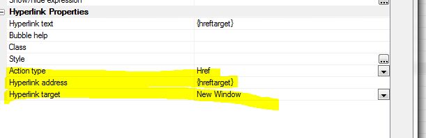
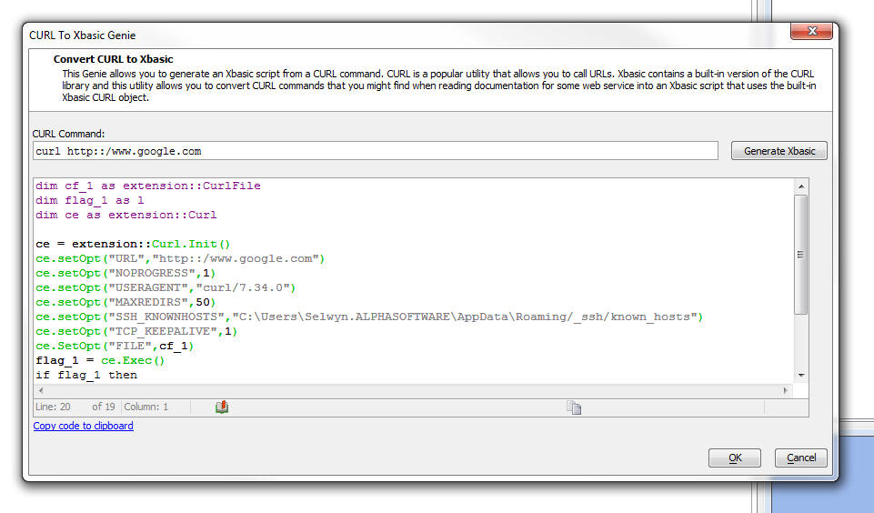
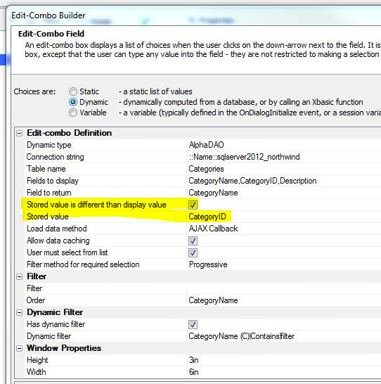
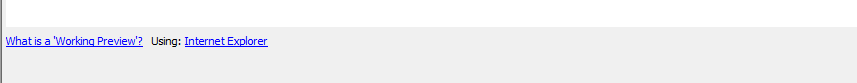
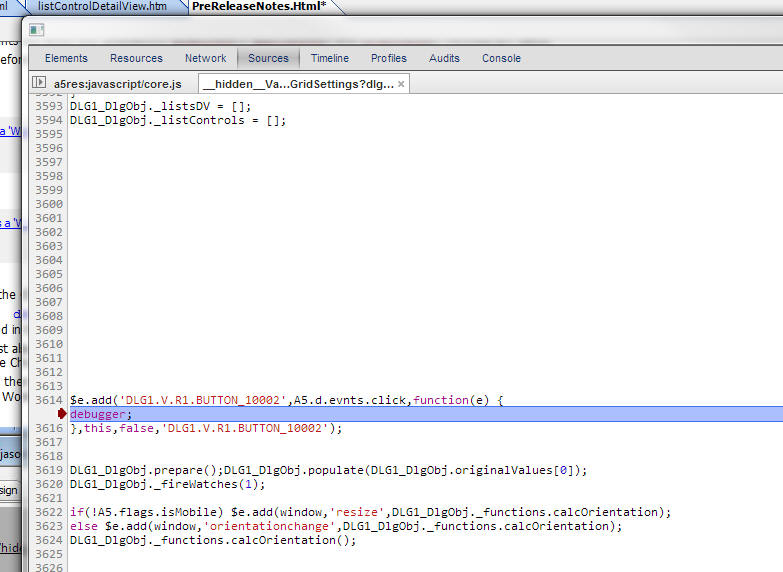
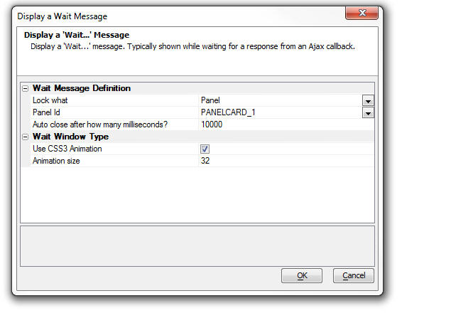
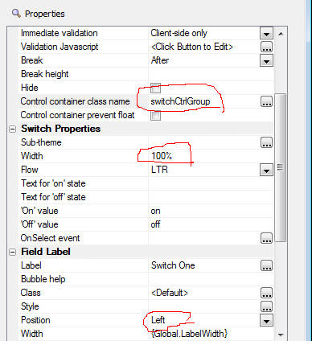

This document describes the updates and fixes made to Alpha Anywhere since its initial release.
To see the 'What's New in V12' document (which describes all of the new features in Alpha Anywhere's initial release) please click here.
Please note that Alpha Anywhere patches are only available to users with
a current subscription.
You can verify your subscription status from within Alpha Anywhere by
going to Help, About, or by clicking this link shown here (https://activation.alphasoftware.com/subscriptionStatus.aspx).
If you install an update for which your subscription is not entitled,
you will need to uninstall the update and rollback to an older version
that you are authorized to use in order to continue using Alpha
Anywhere.
In addition to the official updates that Alpha Software makes available from time to time (which are described in this document), we also make available our internal pre-release builds that allow you to see what features have been added and what bugs have been fixed since the last official update. The features and bug fixes in the pre-release build will be part of the next official update. To see the pre-release notes, please click here.
We are pleased to announce Alpha Anywhere Version 3. This release contains a huge number of new features, enhancements, performance improvements and bug fixes.
The standout feature in the release are the enhancements made to the List control to support building disconnected mobile applications. See the 'Features' section for details.
| UX Component | Tree Control - Populating Data using Javascript |
The data in a tree control on a UX component can
easily be set using Javascript. In this video we
show how to repopulate the entire tree, or
dynamically add a node to an existing tree. Watch Video Download Component |
| UX Component | Submitting all of the Data in a List Control on an Ajax Callback |
When an Ajax callback is made, the data in the
variables on the UX are submitted, but the data
in List controls are not submitted. There may be
situations where you want to submit all of the
data that are currently in a List control to the
server. In this video we show how you can 'harvest' the data that is in a List control and then submit that data to the server when you make an Ajax callback. Watch Video - Part 1 Watch Video - Part 2 Download Component |
| UX and Grid Component | Using Chrome for Working Preview - Debugging Javascript using the Chrome Debugger; |
When you are in the Component builders, the
Working Preview window now allows you to choose
whether you want to use Internet Explorer or
Chrome. Using Chrome has several benefits, including the ability to 'detach' the Working Preview window so that it can be moved to a second monitor and be kept open while you continue to design your component. You can also use the Chrome Debugger to debug your Javascript or inspect elements on the page. Watch Video - Part 1 Watch Video - Part 2 |
| UX Component | List Control - Custom Control - Client-side |
When you define a List control in a UX
component, one of the 'control types' that you
can insert into the List is a 'Custom Control'.
A 'custom control' is computed with an Xbasic
function. Because Xbasic is used to render the
custom control, it means that the custom control
is rendered server-side when the List is
initially rendered. If your UX component has
code that modifies data in the List, the
server-side custom control is obviously not
re-rendered. Therefore, you might want to define your custom control using client-side Javascript. This video shows an approach to creating client-side custom controls in a List component. Watch Video Download Component |
| UX Component - List Control | Vertically Justifying Data in a Row |
By default, data in a columnar List control is
vertically top justified. In a Grid, on the
other hand, data in a Grid row is vertically
middle justified. In a Grid this is easily done
because the generated HTML for a Grid uses an
HTML table. The generated HTML for a List is not
based on an HTML table, and so middle justifying
the data is a little trickier. In this video we show how you can vertically middle justify data in a List row. Watch Video Download Component |
| UX Component - List Control | Displaying Data From Twitter |
The Twitter API returns data in JSON format. The
List control on a UX component is easily
populated with JSON data. The Twitter API,
however, is a little tricky to work with because
it requires an OAuth authorization before you
can call the API functions. Xbasic contains two
built-in functions that simplify this. In this example we show how you can easily build a List control that displays Tweets that are retrieved by making a REST API call to Twitter. In the example we use built-in Xbasic functions to get a 'bearer token' from Twitter. Once we have this token, we can make calls to the Twitter API to get data in a JSON format that is used to populate the List control. IMPORTANT: The video shows selecting the Twitter List from the 'Defined Controls' section of the UX builder toolbox. This has been changed. You should now select the 'Twitter_Display_Tweets_in_a_List_Control' sample UX Component template in the dialog that appears when you create a new UX component. Watch Video - Part 1 Watch Video - Part 2 Watch Video - Part 3 Watch Video - Part 4 |
| Reports | Suppressing Blank Rows in a Layout Table Report |
The Layout Table report editor exposes a
property that you can set for each row in the
Layout Table to suppress the row if it is blank. In this video we show how blank lines in a Layout Table Report are suppressed. We also discuss how the report writer determines that a row is 'blank'. Watch Video |
| UX Component | Setting Content of Scrollable Containers/Windows |
Normally, you can set the content of an element
in a component by simply getting a pointer to
the element and then setting the element's .innerHTML
property. However, if the element whose content
you are setting has been configured to allow
drag scrolling, setting the .innerHTML directly
will destroy the drag scroll settings and the
new content will no longer be scrollable. The solution to this problem is to use the A5.u.element.setContent() function to set the element's content. Watch Video - Part 1 Watch Video - Part 2 Download Component |
| UX Component | Edit-Combo Control - Specifying a Different Stored Value from the Display Value |
Dropdownbox controls allow you to specify that
the stored value is different from the display
value. For example, the control might display a
'ProductName' but the stored value in the
control might be the 'ProductId'. Edit-combo box controls can now also be configured to store a different value than their display value, just like a Dropdownbox control. The benefit of using an Edit-combo control over a Dropdownbox control is that you can display multiple columns of data in the choice list and you can dynamically populate and filter the choices in the list with an Ajax callback every time the control is opened. In this video we show how to configure an Edit-combo control to store a different value from its display value. Watch Video |
| Interactive Window | Executing Shell Commands Directly from the Interactive Window |
You can now execute shell commands directly from
the Interactive Window. You no longer have
to open a separate CMD window to execute shell
commands. This can be a very useful time saver
for developers. For example, when building an application that uses REST APIs, it is common for the API documentation to show how you can use CURL to execute the REST command. Using the Interactive Shell, CURL commands can be executed directly from the Interactive Window. Watch Video - Part 1 Watch Video - Part 2 |
| UX Component | Dynamic Images - Client-Side |
When you add a 'Dynamic Image' column to a List
control to display an image in the List that is
based on other data in each List row you can
specify if the computation of what image to show
should be server-side, or client-side. If
server-side, your expressions that define the
conditional tests are specified in Xbasic. If
client-side, your conditional expressions are
expressed in Javascript. The benefit of client-side dynamic images is that the image will be automatically recomputed when the data in a List row is updated. In this video we show how client-side Dynamic Images can be defined and then we show another technique for creating client-side Dynamic Images using the List's Computed Columns feature. This second technique has the advantage of offering more flexibility. Watch Video - Part 1 Watch Video - Part 2 Download Components |
| UX Component | Client-side Template Tutorial |
Client-side templating allows you to generate
HTML for display by merging a data object into a
template. The client-side template library in
Alpha Anywhere is extremely powerful and can be
compared with similar functionality in 3rd party
templating libraries, such as Mustache.js and
Handlebars.js. In this video we show how a complex template can be designed to display data (a list of Orders with OrderItems for each order) in a richly formatted display. The video shows how the templating system can compute values, including summary values. Watch Video - Part 1 Watch Video - Part 2 Watch Video - Part 3 Watch Video - Part 4 Watch Video - Part 5 Watch Video - Part 6 Watch Video - Part 7 Watch Video - Part 8 Watch Video - Part 9 |
| UX Component - PhoneGap | Displaying .PDF, .XLSX, .DOCX Files |
Unlike desktop browsers, the browsers on mobile
devices typically do not have built-in handlers
for displaying .pdf, .xlsx, .docx and certain
other types of files. If your mobile application is wrapped using PhoneGap you can easily use the built-in native document viewer on both Android and iOS devices. In this video we show how to build a PhoneGap app that can display .pdf and Microsoft Office files. Watch Video |
| UX Component - PhoneGap | Using Native Transitions |
If you wrap a UX component in a PhoneGap shell
you can now use native transitions to animate
certain Panel Cards in your app into view. This
feature relies on the Native Transitions
PhoneGap plugin (iOS only). In this video we show how the Native Transitions plugin can be called. Watch Video |
| Web Security Framework | Alternative Logins - Logging into an Application using Google, Facebook, LinkedIn or Twitter |
When the Application Server Security Framework
is turned on you can require that a user must
log into an application before they can use it.
A user will enter the userid and password
associated with their account in the Security
Framework in order to log into the application.
You can provide an option for a user to login to their account using the credentials from a social network as an alternative to their account userid/password. You can also allow someone to log into an application using social network credentials and then automatically create a new account in the Application Server Security Framework for that user. These videos demonstrate this functionality. If you have not yet read the documentation on Alternative Login, it is recommended that you read the documentation before watching the videos. Click here to read the documentation. Video 1 - Setting up the Providers Video 2 - Creating Named Providers Video 3 - Configuring Web Security Video 4 - Adding Alternative Login to a UX Component Video 4 - Testing Alternative Login |
| UX Component - List Control | Dialing a Phone Number Shown in the List |
When running on a phone, it is a common
requirement to be able to dial a phone number
that is displayed on screen. For example, you
might have a List control showing contact names
and for each name you have an associated phone
number. In this video we show how you can configure a hyperlink control in the List to dial a phone number. Watch Video |
| UX Component - List Control | Displaying a Custom Message in the List if the List has No Records |
A common requirement in a List is to show a
custom message if the List has no records. The List control has built-in properties to make this easy. You can also automatically center the message horizontally and vertically in the List. Watch Video |
| Video Finder | Finding Videos in the Video Library |
There are a large number of videos that have
been recorded to demonstrate and explain various
features in Alpha Anywhere. The Video Finder
application (accessed from the Help menu) allows
you to search for videos. In Alpha Anywhere V3,
the Video Finder application has been completely
rewritten to make finding videos even easier and
faster. The new Video Finder application has been implemented as a UX component with two List controls - one for the list of categories, and one to list the videos in each category. This video discusses the new Video Finder application. Watch Video |
| UX Component - List Control | Introduction to the List Control Detail View |
The List control can have an associated Detail
View. The Detail View allows you to see details
for the currently selected row in the List. The
Detail View can be updateable, allowing you to
update data that is in the List. In this video we show how you can add a Detail View to a List. We show two different genies that you can use - one for setting up a List with a Detail View, and another for adding a Detail View to an existing List. IMPORTANT: Lists with Detail Views are the essential building block for applications that can work while you are disconnected. For more information about the features of Lists with Detail Views, see the videos in the 'UX Component - Disconnected Applications' category. Even if you do not need to build mobile applications that work while disconnected, the information regarding Lists and Detail Views in these videos will be relevant. Watch Video - Part 1 Watch Video - Part 2 Date Added: 2014-09-07 |
| UX Component - List Control | Contrasting Data Binding at the UX Level with Data Binding at the List Level to Update a SQL Database |
When you want to update data in a SQL database
using a UX component you previously could define
Data Binding properties for the UX component,
then define a server-side action that loaded the
primary keys of the records you wanted to edit
and another server-side action to save the edits
back to the SQL database. Now, using a List control with an updateable Detail View, you can perform edits on a SQL database using the List and its associated Detail View. In this video we contrast the two methods of performing CRUD (create, read, update, delete) operations on a SQL database using Data Binding and List controls. Watch Video - Part 1 Watch Video - Part 2 Download Components Date Added: 2014-09-07 |
| UX Component - List Control | List Control Search Part |
The List control has a built-in Search Part that
allows you to perform searches on the database
that is used to populate the List. (This is very
much like the Search Part in a Grid component). The Search Part in the List can be configured in three different ways: - individual fields for the Search Part (allowing the user for example to enter criteria in a Name, City or Country field) - a single keyword field (allowing the user to enter criteria in a single field then then searching for matches in multiple fields) - query by form (allowing the List's Detail View to be used to enter the search criteria) In this video we show how the various options can be used to search a List. Watch Video - Part 1 Watch Video - Part 2 Watch Video - Part 3 Watch Video - Part 4 Download Components Date Added: 2014-09-07 |
| UX Component - Disconnected Applications | Introduction |
You can build applications that are designed to
work when you are disconnected. The UX component
and the List control are the fundamental
building blocks of these types of applications. In this video overview we show how a UX component is built using a List control with an associated Detail View to display and edit data, how the data in the List is persisted to Local Storage and then how the edits made to the List data are synchronized with the server. We also show how your disconnected data can be 'hierarchical' - i.e. a list of customers, with orders for each customer and order details for each order. Watch Video 1 - Setting up a List with a Detail View using the Quick Setup Genie Watch Video 2 - Editing Data and Persisting Data to Local Storage Watch Video 3 - Introduction to Hierarchical Data Structures For more information on building disconnected applications, click here. Date Added: 2014-09-07 |
| UX Component - Disconnected Applications | Editing Data While Offline and then Synchronizing the Data |
When you build an application for disconnected
operation, the List control is the basic
building block for the application. The List
control is used as the 'offline' data storage.
The data in the List control can be thought of
as an in-memory table. Edits to this data are
persisted to Local Storage and then are pushed
to the server to synchronize with the server
database when a connection is available. In this video we look at how data in the List are edited and then synchronized with the server database. Watch Video Date Added: 2014-09-07 |
| UX Component - Disconnected Applications | Editing Data While Offline - Behind the Scenes - What Data are Stored in the List |
In order to get a better understanding of how
the data in a List control are stored to support
disconnected operation, this video shows how you
can debug into the internal data that is stored
in the List when the user edits, enters and
deletes records. Watch Video Date Added: 2014-09-07 |
| UX Component - Disconnected Applications | Synchronization Errors - Validation Errors |
When a user synchronizes edits to data that were
made while they were offline, there is the
possibility of synchronization errors. These errors can typically result because the user entered a value in a field that was rejected by some server-side validation logic, because of a write conflict, or because the database rejected the edit. In this video we show how synchronization errors that result from server-side validation errors and database errors are handled. Watch Video - Part 1 Watch Video - Part 2 Date Added: 2014-09-07 |
| UX Component - Disconnected Applications | Synchronization Errors - Write Conflicts |
When a user synchronizes edits that were made
while they were offline, there is the
possibility that some other user edited and then
synchronized the same data before the user had a
chance to synchronize his/her edits. If this happens a write conflict will occur and the user will be notified that the synchronize operation could not be completed. The user will have to choose how to resolve the conflict. The developer also has the option of handling write conflict errors programmatically. In this video we show how write-conflict errors are handled. Watch Video - Part 1 Watch Video - Part 2 Watch Video - Part 3 Date Added: 2014-09-07 |
| UX Component - Disconnected Applications | Synchronization Events |
When data in a List control is synchronized with
the server database there are a number of events
that fire (on both the client-side and the
server-side) that give you a lot of control over
the process and allow you to inject custom code
to be executed. In this video we discuss some of the events that fire when data are synchronized. Watch Video Date Added: 2014-09-07 |
| UX Component - Disconnected Applications | Custom Synchronization Handlers |
When the user synchronizes a List that is based
on a SQL database, Alpha Anywhere automatically
generates the SQL statements to perform the
various CRUD (create, read, update, delete)
operations. However, if your List is based on a custom datasource (for example, a web service), then you must write your own functions to handle synchronization of the data. In this video we show an example of how custom handlers can be written to synchronize data. Watch Video - Part 1 Watch Video - Part 2 Download Component Date Added: 2014-09-07 |
| UX Component - Disconnected Applications | Incremental Refresh |
After a List has been populated with data from
the server you can perform incremental refreshes
on the List data to retrieve any edits that have
been made to server data. Unlike a full refresh,
only rows that have been edited are sent to the
client, resulting in a much smaller payload
being sent to the client compared to a full
refresh of the List data. You can also set a 'synchronization policy' in the List definition to specify that every time edits to the List data are synchronized with a server an incremental refresh of the List should also be performed. Watch Video Date Added: 2014-09-07 |
| UX Component - Disconnected Applications | Geographic Data - Capturing Location Information when the User Edits Data |
You can configure a List so that every time the
user enters a new record, or edits a record, the
user's location will be stored. This allows you
to create applications where you capture the
location of the device at the time a record was
edited or entered. In this video we show how this is done. Watch Video - Part 1 Watch Video - Part 2 Download Component Schema for MySQL Table Used in Component Date Added: 2014-09-07 |
| UX Component - Disconnected Applications | Geographic Data - Capturing Location Information when the User Synchronizes Data |
In a previous video we show how location
information can be captured at the time the user
edits a record in the List. But you can also
capture location information at the time the
user synchronizes the data. In this video who show how to configure the List to submit location information at the time the user synchronizes the List. Watch Video Download Component Schema for MySQL Table Used in Component Date Added: 2014-09-07 |
| UX Component - Disconnected Applications | Geographic Data - Geocoding Data |
In order to perform geography searches on your
data (for example, find all records that are
within 5 miles of my current location), you need
to geocode the data in your table. For example,
if you have captured the address for the record,
when the record is synchronized, you can make a
call to a geocoding service to get the
latitude/longitude for the record. Then when the
record is written to the database you can also
compute the location field value so that
geography searches are possible. In this video we discuss the features that the List control exposes to support working with geographic data. Watch Video Download Component Schema for MySQL Table Used in Component Date Added: 2014-09-07 |
| UX Component - Disconnected Applications | Setting Default Values for Fields in New Records |
When you enter a new record in a List with a
Detail View you might want to set default values
for certain of the fields in the Detail View. The List builder allows you to execute Javascript code to compute the default value for each field in the List. This allows for sophisticated computations for the default value, including setting the default value for a field to the value that was just entered into the previously entered record. Watch Video Date Added: 2014-09-07 |
| UX Component - Disconnected Applications | Synchronizing Data in Batches |
If the user has made a large number of edits
while they were offline you might want to
synchronize the data in batches, rather than
sending all of the edits to the server at once.
In this video we show how you can configure the synchronization process so that data are sent to the server in batches. Watch Video Download Component Date Added: 2014-09-07 |
| UX Component - Disconnected Applications | Delaying Populate List Till Active Search |
In an application designed for disconnected
usage, the user will typically load a subset of
the database onto their mobile device while they
have connection. This is usually done by adding a Search Part to the primary List control in the component and specifying the the List should not be populated until the user has performed a search to retrieve the 'records of interest'. TIP: For more information on how to set up the Search Part for a List control see the video titled 'List Control Search Part'. Watch Video Date Added: 2014-09-07 |
| UX Component - Disconnected Applications | Settings Maximum Number of Records that a Search Can Return |
In an application designed for disconnected
usage, the List controls in the UX component
hold the data that will be available while the
user is offline. These Lists are populated when
the user does a search to retrieve the 'records
of interest' that they want to have available to
them while they are on-line. Since the amount of data that can be held on a mobile device is limited, you will typically want to ensure that the user does not enter search criteria that retrieve too many records. In this video we show how you can set limits on how large a result a user search is permitted to return. Watch Video Date Added: 2014-09-07 |
| UX Component - Disconnected Applications | Persisting Data to Local Storage |
When you build an application for disconnected
operation you need to be sure that the data in
the application is persisted to Local Storage so
that edits that are made to any data are not
lost if the application is restarted before the
user has had a chance to synchronize the data
with the server. Watch Video - Part 1 Watch Video - Part 2 Watch Video - Part 3 Date Added: 2014-09-07 |
| UX Component - Disconnected Applications | Working with Hierarchical Data |
The data for disconnected applications are
stored in List controls. In many types of
applications the data you need to work with is
hierarchical. For example, you might have a list
of customers. Each customer has orders and each
order has order details. In a connected application, you can make an Ajax callback to the server when a user selects a different customer to fetch to orders for that customer. However, in a disconnected application you cannot make callbacks to the server, so when the user selects a customer, the orders for that customer must already have been retrieved from the server so that the data can be shown without making an Ajax callback. The List control can easily be populated with hierarchical data. In this video we explain how a List control is populated with a customers, each customers' orders, and each order's details. Watch Video - Part 1 Watch Video - Part 2 In this follow on video we show how new records can be added to child tables and how the new records are automatically linked to their parent. In the video we show how a new order is added for the selected Customer record and then how new order detail records are added for the new order. When the data are synchronized, the linking fields are automatically filled in - the customer Id is filled into the new order record and the order id is filled into the new order detail records. Watch Video - Part 3 Download Component Date Added: 2014-09-07 |
| UX Component - Disconnected Applications | Managing Local Storage |
When you build an application that is designed
for offline use (i.e. a disconnected application), the data in
the List controls, and the variables in the UX
component are persisted to Local Storage. In this video we show how you can manage the data in Local Storage using the built-in Local Storage manager and using methods of the UX component. Watch Video - Part 1 Watch Video - Part 2 Date Added: 2014-09-07 |
Building Disconnected Mobile Applications - The UX component now allows you to build mobile applications that work while you are disconnected.
The following videos will give you a quick overview of building disconnected applications in the UX component:
Watch Video 1 - Setting up a List with a Detail
View using the Quick Setup Genie
Watch Video 2 -
Editing Data and Persisting Data to Local Storage
Watch Video 3 - Introduction to Hierarchical
Data Structures
For detailed information about this feature, click here.
UX Component - List Control - Detail View and Search Part- List controls can now have an updateable Detail View and an integrated Search Part.
This feature is central to building disconnected applications, but should also be of great interest to developers of traditional desktop web application. (See the section in the detailed information - see link below - that contrasts Data Binding with updateable Lists).
For detailed information about this feature, click here.
Application Server - 64 bit Machines - Alpha
Anywhere is now compiled using a special compiler switch
that allows access to more system RAM when running on a
64 bit machine. As a 32bit application, the amount of
system RAM that Alpha Anywhere can access is limited to
approximately 2GB. Now, up to 4GB of system RAM can be
accessed. As a result of this change larger files can be
uploaded, more simultaneous uploads can be performed,
more sessions can be handled, and server restarts
because of memory fragmentation should be needed less
frequently.
Video Finder - The Video Finder (accessible from the Help/Video Finder menu) has been completely rewritten. The Video Finder now loads much more quickly and searches are much faster. Also, you can now click the 'Preferences' button on the toolbar to specify if the Video Finder should be opened in a MDI window or a modeless window. The modeless window option is useful if your computer has two monitors because it allows you to drag the Video Finder window to the second monitor and keep it open while you are working.
UX Component - List Control - Custom 'No Records in
List' Message - A common requirement in a List is to
show a custom message if the List has no records.
The List control has built-in properties to make this
easy. You can also automatically center the message
horizontally and vertically in the List. See image
below.
Watch Video
UX Component - List Control - Hyperlink - Telephone - You can now configure a hyperlink control in a List to dial a telephone number. This is particularly useful in mobile applications that are run on a phone.
Assume you have a List control with this data:
name|phoneDisplay|phoneDial
John Smith (home)|(555) 555-5555|+15555555555
John Smith (mobile)|(555) 555-5556|+15555555556
The List data contains both the phone number to display in the List and the phone number to actually dial. Notice that the phone number that should be dialed includes the +1 prefix to indicate that this is a U.S. phone number. The phone number to be dialed must start with + and then the country code (1 in the case of the U.S.).
The phone number to be dialed can also include special directives. For example you can insert 'p' in the number to indicate a one-second pause and 'w' to indicate 'wait for dial tone'.
Using the sample data shown above, to configure the hyperlink to dial the telephone number in the 'phoneDial' field, but display the number shown in the 'phoneDisplay' field, you would set the 'Action type' property to 'Telephone', the 'Phone number' field to '{phoneDial}' (note that the placeholder is case-sensitive) and the 'Hyperlink text' property to '{phoneDisplay}', as shown in the image below.
It is permissible for the value passed in as the phone number to dial to include spaces and parentheses. For example, +1(555) 555-5555 is a valid number to dial.
If, for example, your List data had separate fields for the phone number (called 'phone' for example) and country code (called 'code' - without the leading + in the data), you could set the 'Phone number' field to:
+{code} {phone}
UX Component - List Control - Hyperlink - E-mail - You can now configure a hyperlink control in a List to open the associated e-mail client and fill in the 'to' address with a field.
To configure a hyperlink to open an e-mail client, set the 'Action type' to 'Email' and the 'Email address' to the value you want to put into the email client's 'to' address field. You can use placeholders in the 'Email address' property to refer to data in a field in the current row of the List.

UX Component - List Control - Hyperlink - Specifying a Target HRef - Previously, when you added a hyperlink control to a List, the action associated with the hyperlink was always some Javascript code. Now you can define standard HTML hyperlinks with an 'href' attribute that specifies the hyperlink target.
To specify a hyperlink target, set the 'Action type' to 'Href' and then specify the 'Hyperlink address'. You can use a placeholder for the address. For example if your List has a field called 'address', you can specify the 'Hyperlink address' as {address}.
The hyperlink address must include the protocol if the target is not a page in the application webroot. For example, to display bing.com, you would need to set the target to 'http://www.bing.com', but to display a page called 'page1.a5w' in the current webroot, you would just need to set the target to 'page1.a5w'.

Client-Side Template Tester - User Interface Improvements - The user interface in the client-side template tester window has been enhanced. The window is now resizable and has separate tabs for JSON Data, Template, Javascript and CSS.
As you edit in any of these windows the template preview is automatically updated in the right part of the window.

json_reformat_safe() Function - Reformats as string of JSON data with line-breaks and optional indentation.
Syntax:
c json_text = json_reformat_safe(json_text [, flagIndent = .t.])
For example:
dim json as c
json = <<%txt%
{firstname: 'Fred', lastname: 'Smith', Address: {
Street: '123 Main St',
City: 'Boston',
State: 'Ma'
}
}
%txt%
?json_reformat_safe(json)
= {
"firstname": "Fred",
"lastname": "Smith",
"Address": {
"Street": "123 Main St",
"City": "Boston",
"State": "Ma"
}
}
NOTE: json_reformat_safe() wraps the lower level json_reformat() function. The json_reformat() function only accepts 'properly formed' JSON strings (property names must be double quoted and string values must be double quoted). json_reformat_safe() will automatically convert JSON strings where property names are not quoted and strings are single quoted.
json_extract() Function - Extracts a property from a JSON object .
Syntax
c text = json_extract( C json_text, c property_name)
NOTE The JSON text passed to the function must be properly formed (i.e. use double quotes on property and string names). You can use json_reformat_safe() to 'clean' up the JSON string before calling json_extract.
For example:
dim json as c
json = <<%txt%
{
name: 'Fred',
address: {
street: '123 Main St',
city: 'Boston',
state: 'MA'
}
}
'json_extract() requires properly formed JSON, so
'we first call json_reformat_safe()
dim json2 as c
json2 = json_reformat_safe(json)
?json_extract(json2,"name")
= "Fred"
?json_extract(json2,"address")
= "
{
street: '123 Main St',
city: 'Boston',
state: 'MA'
}
"
%txt%
Grid Component - Export - Comma Delimited ASCII - Quoting Fields with Commas - If the data you are exporting has commas in the data, the fields with commas are now quoted. If there are quotes inside a field, the quotes are escaped as double quote (e.g. "").
UX Component - Image Upload - Clear Image - Action Javascript has a method to upload an image and save the uploaded image in a field in the table that the UX is bound to. However there was no easy way to clear out a previously uploaded image - and set the field back to a null value. A new action in Action Javascript now support the 'Delete Image' action.
UX Component - Security Framework - Alternative Login - Login with Google, Facebook, Twitter and LinkedIn - You can now allow users to log into an Alpha Anywhere application using a 'social network' login.
The social network logins are referred to as 'alternative logins' because they provide an alternative way for a user to log into their account in the Alpha Anywhere security system using their social network credentials, rather than the userid/password associated with their account in the Alpha Anywhere security system.
The Alternative Login features are exposed as new actions in Action Javascript for use in a UX component.
For complete details on the Alternative Login feature click here.
Video 1 - Setting up the Providers
Video 2 - Creating Named Providers
Video 3 - Configuring Web Security
Video 4 - Adding Alternative Login to a UX Component
Video 4 - Testing Alternative Login
NOTE: In a previous pre-release build we added support for Google's OpenID protocol.Google has deprecated this protocol, and therefore we will not be supporting it in Alpha Anywhere. If you attempted to test the OpenID protocol in a pre-release build, please send a bug report and we can provide instructions on removing the OpenID elements as they are not compatible with the current system, which is based on oAuth.
Xbasic - CURL - CURL is a popular utility that can be used for many tasks, such as making REST API calls. CRUL is now exposed as a top level Xbasic object, allowing you to execute CRUL commands from your Xbasic code.
Many APIs are documented using CURL examples.
You can use a built-in genie to convert a CURL command into an Xbasic script.
To get to the CURL genie, right click on white space in the Xbasic code editor and select the 'Genies...' command. The select the 'CURL command to Xbasic....' command.

This opens the CURL to Xbasic Genie where you can type in a CURL command then then click the 'Generate Xbasic' button to generate the Xbasic code to execute the specified CURL command.

For more information on the Xbasic CURL object, click here.
Xbasic - Parsing a Name/Value String - extension::URIQuery Class - Xbasic now has a new utility class that makes it very easy to parse name/value pairs in a 'query string'.
The following Interactive Window session demonstrates use of this class:
dim qs as c = "name=fred&city=boston&country=&age=25"
dim postQ as extension::URIQuery
postQ.ParseURIQuery(qs)
?qs
= "name=fred&city=boston&country=&age=25"
?postq.age
= "25"
?postq.country
= ""
?postq.ToJson()
= {"name":"fred","city":"boston","country":"","age":"25"}
Template Tester - Tools Menu - The Template Tester can now be opened directly from the Tools menu when the Web Control Panel has focus.
The Template Tester is useful when you are constructing templates that generate HTML by expanding data in an object. See 'Client-side Templates' in the Release Notes for information on templates.
NOTE: While templates are documented in a section called 'Client-side Templates' this is somewhat misleading because you can also use templates in server-side code using the a5_merge_JSON_into_template() Xbasic function.
Client-side Template Enhancements - Client-side Templates (first introduced in build 2091 - 4284 - see Release Notes for more information) have been enhanced.
The {*root} Tag
Previously if the data you passed into the A5.u.template.expand() function was an array (as opposed to an object with an array as property of the object), you could not use the {*header} and {*footer} directives in your template to generate a header or footer for the array data.
Now, you don't have to artificially structure your data as a top level object with an array as a property of the object. The {*root} tag is now supported when the data passed in is an array.
Consider the following sample data:
var data = [
{firstname: 'Fred', lastname: 'Smith'},
{firstname: 'John', lastname: 'Jones'}
]
and the following template:
var template = [
'{*root}',
'{*header}There are {root.length} people
{/*header}',
'{firstname} {lastname}
',
'{*footer}Count: {root.length} {/*footer}',
'{/*root}'
].join('');
This data and template will product this output:
There are 2 people
Fred Smith
John Jones
Count: 2
Because the template uses the {*root} tag, the data that is passed in is implicitly restructured as:
var data = {
root: [
{firstname:
'Fred', lastname: 'Smith'},
{firstname:
'John', lastname: 'Jones'}
]
}
Escaping the { and } Characters in a Template
The { and } characters in a template indicate placeholders for merged data. If you want to explicitly output either of these characters you can escape them using a leading backslash.
Assume that the data you pass to the template expander is:
{firstname: 'Fred'}
Assume that you want the output from the template to be
{Fred}
You would define your template as:
\{{firstname}\}
Pre-processing Arrays Before They are Expanded
You can now pre-process arrays before they are expanded.
For example, assume you have the following data:
var data = {
company: [
{firstname: 'Fred', lastname:
'Smith'},
{firstname: 'John', lastname:
'Jones'},
{firstname: 'Andrea', lastname:
'Jones'},
{firstname: 'Margo', lastname:
'Jones'}
]
}
And the following template:
var template = [
'{company}',
'{firstname} {lastname}
',
'{/company}'
].join('');
This template and data combination will result in this output:
Fred Smith
John Jones
Andrea Jones
Margo Jones
But, say you only wanted to output the top two customers. To do this you would need to pre-process the company array before it was expanded. You can specify the name of a function (which can be a global function, or a function in a namespace) to call before an array is expanded using the @functionName directive in the placeholder for the array.
For example, notice in the template below, the placeholder for the company array specifies that the processCompany function should be called before the data are expanded:
var template = [
'{company@processCompany}',
'{firstname} {lastname}
',
'{/company}'
].join('');
The array pre-processor function gets called with three arguments
Your array pre-processor function must return the array that you want to render.
Here is how the processCompany array pre-processor function could be defined:
function processCompany(data,temp,root) {
//limit to first two items in the array
data = data.slice(0,2);
return data;
}
The resulting output is now:
Fred Smith
John Jones
Now assume you want to first sort the data by the 'firstname' property, then return the top two entries. In this case, the array pre-processor function would be defined as:
function processCompany(data,temp,root) {
//sort on the 'firstname' property
data.sort( function(a,b) {
if (a.firstname < b.firstname) return
-1;
if (a.firstname > b.firstname) return
1;
return 0;
}
)
//limit to first two items in the array
data = data.slice(0,2);
return data;
}
The resulting output is now:
Andrea Jones
Fred Smith
An important use for the array pre-processor function is to compute summary data for the array. See Using the Special "root" and "temp" Variables in Templates below. You can compute all of the summary values your template needs in a single function, rather than defining separate functions for each summary value your template outputs.
Using the Special "root" and "temp" Variables in Templates
You can use the special "root" and "temp" variables in a template by enclosing them in [ and ].
The example below demonstrates the use of both [root] and [temp] in the template.
Download component that demonstrates this example.
TIP: To watch a video of how the template used in this example was developed, watch these videos:
Watch Video - Part 1
Watch Video - Part 2
Watch Video - Part 3
Watch Video - Part 4
Watch Video - Part 5
Watch Video - Part 6
Watch Video - Part 7
Watch Video - Part 8
Watch Video - Part 9
For example, consider the following data set:
var data = [
{
orderId: 1,
date: '1/1/2014',
orderItems: [
{itemId: 1, qty: 3, price: 23.4},
{itemId: 23, qty: 2, price: 3.3},
{itemId: 7, qty: 5, price: 5.3}
]
},
{
orderId: 2,
date: '1/2/2014',
orderItems: [
{itemId: 31, qty: 7, price: 3.8},
{itemId: 17, qty: 4, price: 9.2}
]
},
{
orderId: 3,
date: '1/5/2014',
orderItems: [
{itemId: 11,
qty: 9, price: 13.3},
{itemId: 27,
qty: 2, price: 19.2},
{itemId: 6,
qty: 19, price: 3.6},
{itemId: 7,
qty: 22, price: 9.1}
]
}
]
The data are an array of order objects. Each order has a nested array called 'orderItems' that have the order items for that order.
Assume that you would like the template to render as shown below:
| # | Item Id | Quantity | Price | Extended Total |
| 1 | 1 | 3 | $23.40 | $70.20 |
| 2 | 23 | 2 | $3.30 | $6.60 |
| 3 | 7 | 5 | $5.30 | $26.50 |
| Count: 3 | Avg Quantity: 3.33 | Avg Price $10.67 | Total: $103.30 |
| # | Item Id | Quantity | Price | Extended Total |
| 1 | 31 | 7 | $3.80 | $26.60 |
| 2 | 17 | 4 | $9.20 | $36.80 |
| Count: 2 | Avg Quantity: 5.50 | Avg Price $6.50 | Total: $63.40 |
| # | Item Id | Quantity | Price | Extended Total |
| 1 | 11 | 9 | $13.30 | $119.70 |
| 2 | 27 | 2 | $19.20 | $38.40 |
| 3 | 6 | 19 | $3.60 | $68.40 |
| 4 | 7 | 22 | $9.10 | $200.20 |
| Count: 4 | Avg Quantity: 13.00 | Avg Price $11.30 | Total: $426.70 |
There is a lot going on in this example. The template for this example is shown below.
Items of note in this example include:
Here is the template for this example:
| # | ',Item Id | ',Quantity | ',Price | ',Extended Total | ',
|---|---|---|---|---|
| {[countOneBased]} | ',{itemId} | ',{qty} | ',{price:number(\'$#,###.00\')} | ',{qty*price:number(\'$#,###.00\')} | ',
| Count: {[temp].itemCount} | ',', | Avg Quantity: {[temp].averageQuantity:number(\'#.00\')} | ',Avg Price {[temp].averagePrice:number(\'$#,###.00\')} | ',Total: {[temp].totalExtendedPrice:number(\'$#,###.00\')} | ',
The array pre-processor function for the 'orderItems' array is defined as follows:
function orderItemsPreProcessor(data,temp,root) {
var totalQuantity = 0;
var totalPrice = 0;
var totalExtendedPrice = 0;
var extendedPrice = 0;
var _d = '';
for(var i = 0; i < data.length; i++) {
_d = data[i];
extendedPrice = _d.qty * _d.price;
totalExtendedPrice =
totalExtendedPrice + extendedPrice;
totalPrice = totalPrice + _d.price;
totalQuantity = totalQuantity + _d.qty;
}
//the first time this function is called temp.grandTotal will be undefined
//so we initialize it to 0
if(typeof temp.grandTotal == 'undefined') temp.grandTotal =
0;
//we can then accumulate the grand
total for all orders
temp.grandTotal = temp.grandTotal + totalExtendedPrice;
temp.averagePrice = (totalPrice /
data.length);
temp.averageQuantity = (totalQuantity / data.length);
temp.totalExtendedPrice = totalExtendedPrice;
temp.itemCount = data.length;
//it is CRITICAL that the pre-processor function return an
array to be expanded
//even though this function has not modified the data in the
'data' array,
//it must still return the 'data'
array
return data;
}
Templates Can Reference Functions in Any Namespace and Can Take Arguments
Previously, when a template referenced a function, the function needed to be defined as a global function. Now, templates can reference functions an arbitrary namespaces.
Consider the following simple example:
Data:
var data = [
{firstname: 'Fred', lastname: 'Smith'},
{firstname: 'John', lastname: 'Jones'}
]
Javascript function definition:
(Notice that the function takes two arguments and is in the 'obj' namespace.)
var obj = {
fullname: function(fn,ln) { return 'Hello ' + fn + ' ' +
ln + ''}
}
Template:
(Notice that the template calls the function in the 'obj' namespace and passes in argument values from the current row.)
var template = '{firstname} {lastname} Function call is
output here: {@obj.fullname(firstname,lastname)}
'
The output HTML produced is:
Fred Smith Function call is output here: Hello Fred
Smith
John Jones Function call is output here: Hello John
Jones
Defining Custom Formatters
Templates can format data before it is output using the built-in format directives. For example, you can format a number so that it has $ and two decimal places by using the :number() format directive.
For example:
{price:number(\'$#,###.00\')}
However, you can also define your own custom format directives. This is done by adding functions to the A5.u.template.formats object.
Consider the following example:
Data:
var data = {
company: [
{firstname: 'Fred', lastname:
'Smith', phone: 7815551234},
{firstname: 'John', lastname:
'Jones', phone: 2125551234},
{firstname: 'Jane', lastname:
'Jones', phone: 4155551234},
{firstname: 'Margo', lastname:
'Jones', phone: 4325551234}
]
}
Template:
var template = [
'{company}',
'{firstname:formatName(\'l\')} {lastname:formatName(\'u\')} {phone:phoneNumber}
',
'{/company}'
].join('');
Notice the template uses custom formatters for the each of the fields. Both 'firstname' and 'lastname' use a custom formatter called 'formatName' and in one case an argument value of 'l' is passed in (to format the data as lower case) and in the second case, an argument value of 'u' is passed in (to format the data as upper case).
The 'phone' field uses a custom formatter called 'phoneNumber'. This formatter does not take any arguments.
To define these two custom formatters, the following Javascript is used to add the format functions to the A5.u.template.formats object:
A5.u.template.formats.formatName = function(value,flag)
{
if(flag == 'u') return value.toUpperCase();
else if(flag == 'l') return value.toLowerCase();
else return value;
}
A5.u.template.formats.phoneNumber = function(value) {
return value.toFormat('=(###)-###-#####');
}
Notice that the custom format functions all get passed 'value' - the value to be formatted.
Arguments Passed to Template Functions
If a template function does not explicitly specify arguments, the implicit arguments passed to the function now include the special 'temp' and 'root' variables.
For example, consider the following template snippet:
{@myCustomFunction}
This template function does not specify any arguments.
Therefore the 'implicit' arguments for the function
called are:
Previously, only 'data' and 'context' were passed to the function.
Where context is a string with the name of the variable that the function was being called in the context of. For example, in a {*header} or {*footer} directive for an array called 'company' the 'context' would be 'company'. Hhowever in an individual item in the company array, the context would be blank (as the context is implicit).
UX Component - List Control - Dynamic Images - Client-Side - The List control now allows you to define client-side Dynamic Image fields.
Previously, Dynamic Images were computed on the server. This meant that if the List was populated dynamically using Javascript code, the Dynamic Images would not be computed.
The Dynamic Image builder now allows you to specify the type of Dynamic Image.
If you choose the 'Client-side' option, then you must enter the condition expressions using Javascript. Keep in mind that Javascript is case-sensitive, you must use double equals (i.e. ==) and not a single equals for equality tests, and that strings must be single quoted. Also, when referring to a field in the current row, the field name is prefixed with data. .
The major benefit of client-side dynamic images is that if the data in a List row is edited, the Dynamic Image is immediately recomputed.
Watch Video - Part 1
Watch Video - Part 2
Download Components
UX and Grid Components - Javascript - Trapping Syntax Errors - When you save a component, Javascript function declarations are checked for syntax errors. Also when you edit the Javascript for an event handler, the syntax is checked for syntax errors. Previously this functionality was available, but was turned off by default. Now, it is turned on by default because a more robust method for checking Javascript syntax is used. (Based on the Node.JS 'Grasp' module).
If you want to disable Javascript syntax checking, go to View, Settings, Preferences, Javascript.
OLE Automation - Named Parameters - You can now use named parameters in an OLE automation call. The technique for doing this involves defining a dot variable with the parameters, then passing in the dot variable to the OLE method.
Previously, if you want to specify a value for an optional parameter you had to supply values for all of the optional parameters preceding the one you wanted to define. This could be very tedious.
For example, consider the function prototype for the Microsoft Word .open() method.
.Open(FileName, [ConfirmConversions], [ReadOnly], [AddToRecentFiles],
[PasswordDocument],
[PasswordTemplate], [Revert], [WritePasswordDocument], [WritePasswordTemplate],
[Format],
[Encoding], [Visible], [OpenAndRepair], [DocumentDirection], [NoEncodingDialog],
[XMLTransform])
As this prototype shows, only the first argument (FileName) is required. All other arguments are optional. If you wanted to supply a value for (say) the 'ReadOnly' argument, you would need to specify a value for the 'ConfirmConversions' property as well.
Now, you can define a dot variable and define property values for just the arguments you want to set.
For example:
Dim wrdApp As P 'Word.Application
Dim wrdDoc As P 'Word.Document
wrdapp = ole.create("word.application")
'define a .dot variable and define the arguments you care about
dim args as p
dim args.FileName as c = "e:\files\hello.docx"
dim args.ReadOnly as l = .t.
'pass in the .dot variable to the OLE .open() metehod
wrdDoc = wrdapp.Documents.Open(args)
OLE Automation - Bubble-help for OLE Methods - The Xbasic editor and Interactive window now show the argument list for OLE methods. This is especially useful when you want to use named parameters and pass in a dot variable to the method because it lets you see the argument names, which you will use in the dot variable.

Interactive Window - Shell Commands - You can now execute shell commands directly from the Interactive window. Examples of the different use cases for this feature include:
Watch Video - Part 1
Watch Video - Part 2
Any command with a $ prefix that you enter in the Interactive window is considered to be a shell command. For example, type the following in the Interactive window:
$dir c:\windows
For detailed information on the Interactive window shell commands click here.
Action Javascript - Open .a5w Page Action - Page URL - If the page URL is specified by a placeholder that references fields in the current component, or uses placeholders in the URL, you can now specify that the value in individual placeholders should not be URL encoded by entering the placeholder name as:
{nourlencode:placeholderName}
For example:
{nourlencode:field1}
By default all placeholder values are URL encoded when they are replaced in the URL.
UX Component - Edit-Combo Control - Specifying
Different 'Stored' and 'Display' Values -
Dropdownbox controls allow you to specify that the
stored value is different from the display value. For
example, the control might display a 'ProductName' but
the stored value in the control might be the 'ProductId'.
Edit-combo box controls can now also be configured to
store a different value than their display value, just
like a Dropdownbox control.
NOTE: If you configure an Edit-combo to have a different stored value from its display value, then you must check the option to only allow the user to select values in the choice list. The user cannot type arbitrary values into the control.

The benefit of using an Edit-combo control over a
Dropdownbox control is that you can display multiple
columns of data in the choice list and you can
dynamically populate and filter the choices in the list
with an Ajax callback every time the control is opened.
Watch Video
jQuery - Make Safe for Alpha Anywhere - a5_make_jQuery_safe() Function - Many jQuery Javascript files are written using the $ object as a proxy for the jQuery object. This makes it impossible to use these files in AlphaAnywhere without first editing the files and changing the $ object to the jQuery object. This can be a tedious process because a simple search and replace will not work as that would replace the $ string literal.
The a5_make_jQuery_safe() function converts all references to the $ object to 'jQuery' while leaving $ in variables names and strings unchanged.
NOTE: This function is built on top of the Node.JS GRASP module.
Syntax:
L flag =a5_make_jquery_safe(c filename [, flagCreateBackup = .t. ])
If fileCreateBackup is .t. a file with the extension of .old is created with the original text in the file.
HTML Reports - No Records in Report - If an HTML report has no records in it, it previously displayed a blank page. Now a 'No records in report' message is shown.
UX Component - A5.u.element.setContent() Function -
Normally, you can set the content of an element in a
component by simply getting a pointer to the element and
then setting the element's .innerHTML property. However,
if the element whose content you are setting has been
configured to allow drag scrolling, setting the .innerHTML
directly will destroy the drag scroll settings and the
new content will no longer be scrollable.
The solution to this problem is to use the
A5.u.element.setContent() function to set the element's
content.
Watch Video - Part 1
Watch Video - Part 2
Download Component
Syntax
A5.u.element.setContent(element,html [, options])
Where:
Example:
//get a pointer to the 'CONTAINER_1' container
var ele = {dialog.object}.getPointer('CONTAINER_1');
var string = 'define some long string of html here';
string = string + 'end of string';
var settings = {animation: {allow: true}};
var settings: {
fireEvent: false, //fire the scroll event
mode: 'into-view', //mode can be 'into-view', 'top', 'bottom'
axis: 'both', //which axes do you want to scroll on
offset: {x: 0, y: 0}, //offset from the element that you are
scrolling to
animation: {allow: true, duration: 300} //animation
}
//scroll the element 'span1' into view
var obj = {element: 'span1', settings: settings};
A5.u.element.setContent(ele,string,obj);
//in this next example, instead of scrolling an element into view,
//we scroll to position 0,0 in the new content
//get a pointer to the 'CONTAINER_1' container
var ele = {dialog.object}.getPointer('CONTAINER_1');
var string = 'define some long string of html here';
string = string + 'end of string';
var settings = {}
var obj = {x: 0, y:0, settings: settings};
A5.u.element.setContent(ele,string,obj);
Temp File Folder - Temporary Files - Code has been added to more aggressively clean up any temporary files that Alpha Anywhere created in the temp file folder. To turn on this feature for the development version go to the View/Settings/Preferences menu and set the value for the 'TEMP files' property.
To specify the setting in the Application Server (or the Development Server), go to the 'Advanced' tab in the server control panel.

Reports - Layout Table Reports - Suppress Blank Rows - A new property has been added for each row in a Layout Table report that makes it easy to suppress the entire row in the report if all of the columns in that row are blank.
To set the property, click in the vertical ruler to the left of the row whose property you want to set.
Then, in the property sheet, set the 'Suppress Blank' property.
A row is considered to be blank if the expression that defines the contents for each column in the row is a NULL value (i.e. equals the value returned by the null_value() function).
Note that:
UX Component - List Control - Show/Hide List Footer -
.rowExpander() Method - Each row in a tabular
List layout can have an optional 'List Item Footer'.
(Similar to a row expander in a Grid component). The
initial state of the List Item Footer can be opened, or
closed. The
Syntax:
Where:
Twitter - New functions have been added to make working with the Twitter API easier. Working with the Twitter API now requires that you use OAuth. The following two functions have been added:
Watch Video - Part 1
Watch Video - Part 2
Watch Video - Part 3
Watch Video - Part 4
twitter_getBearerToken() Function - Gets a 'bearer token' from Twitter.
Syntax:
c bearerToken = twitter_getBearerToken(C client_id, C client_secret)
The client_id and client_secret must be obtained from Twitter. Go to dev.twitter.com and create an application. Once you have created an application, you can get the keys.
The bearerToken that is returned will allow you to make Twitter API calls.
Typically you will only need to get the bearerToken once in your application. You can then save it in a session variable for use throughout your application.
The source code for the twitter_getBearerToken() function might be of interest to some developers, and is shown below:
function twitter_getBearerToken as c ( client_id as c ,
client_secret as c )
'DESCRIPTION:Uses OAuth 2.0 to get a bearer token from
Twitter.
'LIMITATIONS:X
dim bl as b = client_id+":"+client_secret
dim cf_1 as extension::CurlFile
dim flag_1 as l
dim slist1[2] as c
slist1[1] = "Authorization: Basic "+base64encode(bl)
slist1[2] = "Content-Type: application/x-www-form-urlencoded;charset=UTF-8"
dim ce as extension::Curl
ce = extension::Curl.Init()
ce.setOpt("URL","https://api.twitter.com/oauth2/token?grant_type=client_credentials")
ce.setOpt("NOPROGRESS",1)
ce.setOpt("USERAGENT","curl/7.34.0")
ce.setOpt("HTTPHEADER",slist1)
ce.setOpt("MAXREDIRS",50)
ce.setOpt("CAINFO",a5.Get_Exe_Path()+"\caroot\ca-cert.pem")
ce.setOpt("CAPATH",a5.Get_Exe_Path()+"\caroot")
ce.setOpt("CUSTOMREQUEST","POST")
ce.setOpt("TCP_KEEPALIVE",1)
ce.SetOpt("FILE",cf_1)
flag_1 = ce.Exec()
if flag_1 then
dim result as p = json_parse(cf_1.GetContent())
twitter_getBearerToken = result.access_token
end if
ce.close()
end function
twitter_clientApiCall() Function - Allows you to call a REST API function in Twitter.
Syntax
C result = twitter_clientApiCall( c bearerToken, c request)
The bearerToken must have previously been obtained using the twitter_getBearerToken() function.
Example:
The following Interactive window session shows how you can get 10 tweets for 'London'
dim bt as c = getBearerToken("YourUserKeyHere","YourUserSecretHere")
dim url as c
url = "/search/tweets.json?q=london&count=10&lang=en&type=recent"
json = twitterClientApiCall(bt,url)
'make the JSON 'pretty'
json = json_reformat(json,.t.)
json = convert_utf8_to_acp(json)
showvar(json)
This example gets a user time line
dim bt as c =
getBearerToken("YourUserKeyHere","YourUserSecretHere")
dim url as c
url = "/statuses/user_timeline.json?count=100&screen_name=twitterapi"
json = twitterClientApiCall(bt,url)
'make the JSON 'pretty'
json = json_reformat(json,.t.)
json = convert_utf8_to_acp(json)
showvar(json)
The source code for the twitter_clientApiCall() function might be of interest to some developers, and is shown below:
function twitter_clientApiCall as c ( bearerToken as c ,
request as c )
'DESCRIPTION:Make a REST call to the Twitter API using a
bearerToken that was obtained using the
twitter_getBearerToken() function
'LIMITATIONS:X
dim slist1[1] as c
slist1[1] = "Authorization: Bearer "+bearerToken
dim cf_1 as extension::CurlFile
ce = extension::Curl.Init()
ce.setOpt("URL","https://api.twitter.com/1.1"+request)
ce.setOpt("NOPROGRESS",1)
ce.setOpt("USERAGENT","curl/7.34.0")
ce.setOpt("HTTPHEADER",slist1)
ce.setOpt("MAXREDIRS",50)
ce.setOpt("CAINFO",a5.Get_Exe_Path()+"\caroot\ca-cert.pem")
ce.setOpt("CAPATH",a5.Get_Exe_Path()+"\caroot")
ce.setOpt("TCP_KEEPALIVE",1)
ce.SetOpt("FILE",cf_1)
flag_1 = ce.Exec()
if flag_1 then
twitter_clientApiCall = cf_1.GetContent()
end if
ce.close()
end function
UX and Grid Component - Tab/Accordion Control - onLeave and onBeforeLeave Events - Two new events have been added to the Tab and Accordion Control. The events can be defined at the control level or at the individual pane level.
Report Server - Logging - A new logging feature
has been added for the Report Server. The report server
log is turned on automatically when the logging is
active on the server, which turns on the access and
error logs. With these logs on, be sure to set the
logging to rotate on size and daily to keep the files
sizes under control and easier to manage.
The report Server log data will look like this
[Fri Jul 11 06:58:34 2014] StartRpt
bb8f711ef8a8487f87a528b315827120
C:\A5Webroot\AppServerDemoV12\NWEmployees.a5rpt
C:\Users\Jerry\AppData\Local\Temp\tmp983.pdf
[Fri Jul 11 06:58:35 2014] Finished
bb8f711ef8a8487f87a528b315827120
C:\A5Webroot\AppServerDemoV12\NWEmployees.a5rpt
C:\Users\Jerry\AppData\Local\Temp\tmp983.pdf
| Value | Description |
| [Fri Jul 11 06:58:34 2014] | Date and time of the action |
| StartRpt | The action, which will be "StartRpt", "Finished ", or "RptError" if no error was reported, but the report was not created. |
| bb8f711ef8a8487f87a528b315827120 | A unique identifier that is assigned to each report at build time |
| C:\A5Webroot\AppServerDemoV12\NWEmployees.a5rpt | The report definition requested |
|
C:\Users\Jerry\AppData\Local\Temp\tmp983.pdf |
The physical file created - often a temp file as
shown here |
By matching the identifier, the time to build a report
can be calculated from the timestamp. This can help
identify reports that are slow to build.
If a report has a start action, but no finished or error
action, that would indicate the report server has not
finished the report.
If the action is "RptError", this error may be noted in the Xbasic error log and a special mini-dump file created in the Xbasic log folder. This mini-dump file will have a name syntax similar to "A5ReportServer_20140710115412520.a5dmp" This file can be used by Alpha Software to evaluate the report properties of a failed report.
UX Component - List - Client-side Events - New events have been added.
Xbasic - MongoDB - NoSQL document databases are becoming popular for certain types of applications. A new MongoDB class has been added to Xbasic to make it easy to query, update and manage a MongoDB database from Xbasic.
Technical Note: The Xbasic mongo class it built on top of the MongoDB node.js driver.
Xbasic - CouchDB - You can now query, update and manage a CouchDB NoSQL database from Xbasic.
Performance Improvements in Following Functions and Methods - Major performance improvements in
Web Applications - Security Framework - Active Directory - The Security Framework for Web Applications now supports Active Directory. That means you can authenticate a user using an Active Directory server.
UX, Grid, TabbedUI and PageLayout Components - Working Preview - Chrome - When you use Working Preview you now have the option of using either Internet Explorer, or Chrome. Previously, Working Preview automatically used Internet Explorer.
The benefits of using Chrome for Working Preview include:
Watch Video - Part 1
Watch Video - Part 2
The Working Preview window now has new hyperlinks at the bottom of the screen.
When Internet Explorer is being used, the menu looks like this:

Clicking on the Internet Explorer hyperlink will bring up a dialog that will allow you to change to Chrome. Your choice is stored as part of the component definition. You can choose to use Internet Explorer for some components and Chrome for others.
When Chrome is used for Working Preview, the menu has more options.
The 'Detach Working Preview Window' is particularly useful because it creates a separate, detached window for Working Preview. This window can be moved to a second monitor and be left open while you return to the Design pane to continue editing your component.
You can set the Detached Working Preview window to update immediately every time a property is changed.
NOTE: For very large components, setting the Detached Working Preview to automatically update is not recommended as the delay in updating the Working Preview window will make setting properties seem sluggish.

Debugging Javascript Using the Chrome Debugger
To use the Chrome Javascript debugger, you must insert the
debugger;
command into the Javascript that you want to debug.
You must also, click the 'Open Chrome Debugger' hyperlink before you execute the code you want to debug. This will open the Chrome Debugger in a background window.
You can then invoke the code that you want to debug. When the debugger; command is hit, the Javascript will pause and the Working Preview screen will show:

You can then click the 'Open Chrome Debugger' hyperlink again, and it will bring the Chrome Debugger window to the forefront:

UX Component - List Control - New Methods - New method have been added to the List control that fire when the data in the list are changed. The methods are:
The events fire when the .populate(), updateRow(), appendRows() and removeRows() methods are called.
If the 'before' events return false, the corresponding action does not occur.
UX Component - Mobile Simulator - Now includes iPhone5 option in dropdownbox to select simulator size.
UX Component - Action Javascript - Wait Message - Auto Close After Setting - You now have control over how long to wait before the wait message is closed. By default, the setting is 5000 milliseconds.

email_send_mandrill() function - Sender Name Alias - Support for specifying an alias for the sender name has been added. The dot variable that is passed into the email_send_mandrill() function can now have a .from_name property.
For example:
ms.from_name = "Sales at Alpha" 'friendly name - optional
Here is a complete example
'create a .dot variable to define the message
dim ms as p
ms.send_to = "john@acme.com:John Smith,sally@acme.com:Sally Jones"
ms.from_email = "sales@alpha.com"
ms.from_name = "Sales at Alpha" 'friendly name - optional
ms.subject = "Information You Requested"
ms.message_html = "Here is the information you requested."
dim pResult as p
pResult = email_send_mandrill("mysecretkey",ms)
UX Component - List Control - .scrollToClosestValue() Method - Scrolls to the closest record in the List.
Syntax:
Where
Example:
Scroll the List so that the first Customer with a Lastname starting with 'M' is shown at the top of the List
var lObj = {dialog.object}.getControl('list1');
lObj.scrollToClosestValue('m',true,top,{allow: true, duration: 200})
UX Component - List Control - Tabular Layout - Sorting Columns - Custom Javascript - When a user clicks on a column heading in a List to sort the data on that column, you can specify if the sort should take place client-side or server-side (only appropriate if the List is based on a SQL or DBF data source). Now, a new option has been added to the list of choices. The 'Javascript' option allow you to specify your own Javascript code to execute.
UX Component - Repeating Sections - Set Active Row - setRepeatingSectionActiveLogicalRow() Method - A new method is now available for setting the active row in a Repeating Section.
{dialog.object}.setRepeatingSectionActiveLogicalRow(sectionName,logicalRowNumber)
The logical row number of a row in a Repeating Section and its physical row number are the same, unless rows have been deleted from the Repeating Section. When a row is deleted from a Repeating Section it is not really deleted, it is only hidden.
So, for example, assume that a Repeating Section had 5 rows to start with and then the first three rows were deleted. There would now be two visible rows, (logical row number 1 and 2), but the physical row numbers for these two rows would be 4 and 5. In order to set focus to the last visible row in the Repeating Section (logical row 2, but physical row 5) you can now use the new .setRepeatingSectionActiveLogicalRow() method.
This is more convenient than having to first call the ._repeatingSectionLogicalToPhysicalRow() to convert the logical row number to a physical row number, and then calling the .setRepeatingSectionActiveRow() method.
UX Component - List Control - .getVisible() Method - Returns an object with two properties 'start' and 'end' which contain the zero based row numbers of the rows in the List that are currently visible.
var lObj = {dialog.object}.getControl('list1');
var obj = lObj.getVisible();
alert(obj.start + ' to ' + obj.end);
UX Component - List Control - onNavigate Event - The onNavigate event fires when the List has been scrolled. The e object passed into the event handler has two properties:
UX Component - Hide/Show Controls - .setControlDisplay() Method - A new method is exposed that can be used to show/hide controls. The method will hide/show the control and also its label (if the control has a label).
{dialog.object}.setControlDisplay(name, flag [, mode [, animatationJSON]])
The animJSON object has two properties:
NOTE: If you specify animation, you must load jQuery. To load jQuery, go to the Web Project Properties dialog and turn jQuery on.
Example:
{dialog.object}j.setControlDisplay('FRAME_1',false,'d',{type: 'fade',duration: 3000});
UX Component - Validation - Show/Hide Expressions - If a control has been hidden by a client-side show hide expression, the control is no longer validated.
AppLauncher Component - Browser Flags - A new option allows the query string that loads the target component to suppress the browser flags from showing in the query string. Instead, the browser flags are stored in a session variable called session.__browserFlags.

UX Component - List Control - .scrollToItem() method - This method now has new options that allow you to control where the target row will be in the List. Previously, the List was scrolled so that the target row became visible. But you could not control whether the target row was positioned at the top, or bottom of the List.
Now, you can pass in an optional object to the method with settings. For example:
var listObj = {dialog.object}.getControl('list1');
listObj.scrollToItem(50,{mode: 'top' ,animation: {allow:
true, duration: 200},offset: {x: 0,y: 0}});
Options for 'mode' are: top, bottom, in-view
The offset settings control the number of pixels at the top or bottom of the list between the List edge and the scrolled to row.
UX Component - ButtonList Control - Static JSON - A new option has been added to populate a ButtonList control. The Static JSON option allows you to enter some static data in JSON format as the data source for the ButtonList.
UX Component - List Control - Get List Row Number from Element Method - A new method of the List control allows you to get the List row number (zero based) from an element in the row.
For example, assume that you have a List with a freeform layout and a button in the freeform Layout with this code:
The getRow() function would be defined as:
function getRow(ele) {
//get a pointer to the list - assume list is called 'LIST1'
var lObj = {dialog.object}.getControl('LIST1');
//get the row index by calling the .indexFromElement() method.
//'ele' is a pointer to the button in the List row.
var index = lObj.indexFromElement(ele);
}
PhoneGap Builder - Now uses a token based authentication feature so that once you have successfully logged into the PhoneGap build service, all further interaction with the PhoneGap build service is done using the token (until the token expires - currently set for 24 hours after login). The benefit of this approach is that interacting with the PhoneGap build service is faster as we no longer need to authenticate each time.
UX Component - List Control - Javascript Function Datasource - If a List control specifies a Javascript function as its data source, when the .refreshListMethod() is called an Ajax callback is no longer fired (as it was meaningless). Instead, the function that populates the list is called and the List is repopulated with the function results.
UX and Grid Component - Edit-combo and Auto-suggest Control - The height property was not being honored if it was set to a value that included the 'max' keyword.
UX Component - Testing if the Alpha Anywhere Server is Available - The UX component now supports a new method, .serverIsAvailable() that tests if the Alpha Anywhere server is available. This is a more comprehensive test than simply testing if an Internet connection is available.
NOTE: Contrast this method with the UX component's ._getOnlineStatus() method. This method merely tests if there is an internet connection. It does not make an ajax callback to the Alpha Anywhere server. Is merely uses the HTML5 navigator.online property. The .serverIsAvailable() method, on the other hand, does a lightweight callback to the Alpha Anywhere server to test if the server is available.
The syntax for the .serverIsAvailable() method is:
{dialog.object}.serverIsAvailable( [timeOut [, successFunction [, errorFunction]]);
If you don't specify a timeOut, the default value is 300 milliseconds.
The 'successFunction' parameter allows you to pass in an Javascript function to be called once it is determined that the Alpha Anywhere server is available.
The 'errorFunction' parameter is called if the server is not available.
The function will set these variables in the global A5 Javascript object:
_serverAvailable - true/false
_serverCheckTime - the time the server availability was last checked.
Example:
Execute the 'refreshList' action is the server is available.
function success() {
{dialog.object}.playAction('refreshList');
}
{dialog.object}.serverIsAvailable(300,success);
Grid and UX Component - Search - QBE Syntax - Combining Multiple Wildcard Searches with AND - If your search style is set to 'Exact match' and you enter search criteria that use wildcards, and you have QBE syntax turned on, then you can enter search criteria in the following form:
%string1%,%string2%
This will be interpreted as a search for any record that contains either string1 or string2 in the field.
However, you may want to find records that contain
string1
AND string2.
You can now do this using the
&&
operator in your search definition, rather than the
comma.
Application Server - The Application Server now uses an updated default SSL cipher list to enhance the security of SSL-enabled servers. The new cipher list is based on https://wiki.mozilla.org/Security/Server_Side_TLS
UX Component - List Control - Frame - Modern - Show/Hide - If a List control was in a Frame container and the frame was defined as a modern frame that could be shown/hidden and if the initial state of the frame was hidden, the List controls in the Frame did not render properly when the frame was shown.
UX and Grid Components - Pop-up Modal Windows - Resizing - In some cases, when resizing a modal pop-up window, the window content would not redisplay properly after you stopped resizing the window.
Application Server - SSL - Test Certificates - Firefox - Certificate extensions are no longer generated into self-signed certificates when using the Application or Development Server Settings dialog to generate a self-signed certificate or calling directly from INET::SSLContext::CreateTestCertificate(). Version 31 of Firefox no longer accepts deprecated certificate extensions and this change corrects that problem.
IMPORTANT: You will have to regenerate your self-signed certificate.
UX Component - Map Control - onZoom Event - This event was not firing.
UX and Grid Component - Working Preview - Chrome - Memory Leaks - When using Chrome for Working Preview while building UX and Grids components there is a small memory leak that forces you to have to restart Alpha Anywhere occasionally. A number of these memory leaks have been fixed.
NOTE: This comment does NOT apply to the Application Server - it is only for the Development version.
UX Component - Logical Checkbox - Client-side Show/Hide - If you have defined a text label for the control, the text label was not being hidden when the control itself was hidden.
HTML Layout Reports - A number of minor bugs have been fixed. For example, scrolling HTML Layout reports in a mobile application when the report was shown in a pop-up window did not work the second time the report was opened.
Grid Component - File Upload - User Defined Action - Working Preview - Using this action in Working Preview had previously been supported, but got broken in a recent update. This is now working again.
UX Component - Tab Controls - Embedded Components - Server-side Show/Hide or Security - If a server-side show/hide expression or security group setting removed an embedded component from a tab pane at run-time, a Javascript error would occur.
UX Component - Panel Header/Footer - Container Height - The container height property was honored for a Panel Header or Footer.
Grid Component - Edit Row on Demand - afterRowSwitchFromEditable Client-side event - This event was not firing if the row you were editing was implicitly set to not-editable mode because the user clicked to edit another row and the Grid was set to edit one row at a time.
UX and Grid Component - Javascript Actions - Fixes a recently introduced bug where a Javascript Action that used Action Javascript to open a child component in a div on the parent component failed.
Report Editor - Layout Table Reports - Static HTML Cells - Now honor the font and alignment properties applied at the cell level.
Report Editor - Layout Table Reports - Row size to fit - Now works when row contains static HTML content.
UX Component - List Control - Client Side Summary - Client Side Filtering - Fixed an issue where the client-side summary values were not recalculated if a client-side filter was applied to the List.
UX Component - List Control - Client Side Summary - Fixed an issue where the items in the csSummary object were not upper case, as documented. Also, the count summary value was only being computed if the data in the field was numeric.
UX Component - Lookup Columns - Columnar Layout - If there was no matching row in the lookup List, the data in the List would be misaligned in the List columns.
Grid and UX Component - Lookup Grids - Dynamic Filter - If a Lookup Grid had a dynamic filter, the filter was being applied as a 'user filter' rather than as a 'base filter'. This meant that if the user clicked the 'Clear Search' button on the Lookup Grid, the dynamic filter was removed.
Grid and UX Component - Javascript Actions - Fixed an issue that could have resulted in the .playAction() method invoking the wrong action.
UX Component - Slider - Date Values - Two Value Mode - When a two value slider was configured to show date values, the dates were off by when when you set the value on the date start/end.
Reports - Named Datasources - Fixed a recently introduced issue with reports that use named data sources (not to be confused with named connection strings which do not have any issues).
UX and Grid Components - Client-side Expressions - Date Fields - Client side expressions (for example, show/hide, enable and calculated fields) that are based on controls whose data type is set to 'Date' or 'Time' now treat the controls as true Javascript date objected.
For example, say you had a UX with two input controls (called say 'DATE1' and 'DATE2') and a button. Say you defined as show/hide expression for the button as follows:
DATE1 > DATE2
Assume that the client side date format was set to MM/dd/yyyy and that the values in the two controls were '04/20/2000' and '02/01/2000'.
Previously, this expression was evaluated as as string expression. So the string '04/20/2000' was compared to the string '02/01/2000'.
This might have led to the correct result in some circumstances, but would not have been correct in other circumstances. For example, say that the client side date format was set to dd/MM/yyyy. Now the two values for the date controls would be '20/04/2000' and '01/02/2000' and comparing these two values as strings would lead to a different result.
Now, the input controls are converted to real Javascript data objects (in other words, the date string values are automatically parsed using the setting for the client side date format) and the client-side expression is evaluated using true date values.
Previously, some uses might have implemented their own solution to this problem by defining a custom Javascript function to use in the show/hide expression. For example, the show/hide expression might have been specified as:
compareDates(DATE1,DATE2)
And the compareDates function would have been defined as:
function compareDates(d1,d2) {
var _d1 = new Date();
var _d2 = new Date();
_d1.fromFormat(d1,'MM/dd/yyyy');
_d2.fromFormat(d2,'MM/dd/yyyy');
if(_d1 > _d2) return true;
else return false;
}
If you had previously implemented this pattern, you will now get an error because the inputs to the compareDates() function (d1 and d2) are not date objects and not strings.
UX Component - List Control - Cascading Lists - DBF Tables - Allow Null Selection - If you had defined cascading List controls (i.e. a child List whose data depends on the selection in its parent List) and the List data source was .dbf tables, and the parent List was set to not allow a null selection, then when the UX initially rendered, the child List was not populated, as it should have been. The child List was only populated after the user clicked on a row in the parent List.
Edit-Combo, Auto-Suggest and List Controls - Web Applications - Touch Enabled Computers - Windows 8.* - If you are running a web application on a touch enabled computer under Windows 8.*, Edit-combo, Auto-suggest and List controls will not display a vertical scroll bar because the assumption is that the user will use touch gestures on the list to scroll the data.
This assumption is valid for a mobile application that does not support mouse interaction, but in a web application on a machine that does support mouse interaction, you would want to see a vertical scroll bar.
You can turn off drag scrolling (and thus cause the vertical scroll bar to appear), by executing the following Javascript code:
A5.u.drag.useDragScrolling = 'never';
If your application is running in a Tabbed UI, a good place to inject this code is in the Tabbed UI's 'Javascript to run on startup' property.
In the case of a Grid, you can use the onGridRenderComplete client-side event.
UX Component - Define Custom Watch Events - The client-side 'calculated fields', 'enable expression' and 'show/hide' expressions all generate watch expressions that automatically fire when the 'watched' variables change.
You can completely bypass these properties and instead define your own watch expressions.
For example, the following code can be placed on the client-side beforePrepare event to define a custom watch event that updates the value in 'TEXTBOX1' whenever the value in 'TEXTBOX2' changes.
{Dialog.Object}.dialogWatches['MY_WATCH_EVENT'] = {
watch: ['TEXTBOX2'],
variables: [],
updateColumn: 'TEXTBOX1',
onChange: function(data) {
var dialog = {};
var summary = {};
{Dialog.Object}._getDialogVariables(dialog,summary,data);
var txt2 = {dialog.object}.getValue('textbox2');
{Dialog.Object}.setValue('TEXTBOX1',
{dialog.object}._functions.myFunc2(txt2) );
}
}
Using CSS Icon Images and Bitmap Images - A5.u.icon.html() Function - The Alpha Anywhere Javascript library contains a useful utility function that makes working with CSS Icon images and regular bitmap images easier.
The issue is somewhat complicated because the HTML markup to display
a bitmap image uses the
tag, whereas the HTML markup for a CSS Icon image uses a
tag with special
class names.
The A5.u.icon.html() function takes the name of the image you want to display and generates the appropriate HTML markup. It is also able to interpret the special syntax Alpha Anywhere uses to assign an in-line style to CSS Icons.
For example:
var icon1 = A5.u.icon.html('cssIcon=fa fa-align-center fa-2x {color: blue;}');
will return the following HTML markup:
and:
var icon2 = A5.u.icon.html('images/$$application.chrome.png.a5image');
will return this HTML markup:

UX Component - List Control - Using the Client-side Computed Columns Feature to Display Dynamic Images in a List - The Computed Columns property allows you to define computed (virtual) columns to display in a List. The computed columns can display dynamic images (i.e. images that are based on data in the current row). For example, you could define the following Computed Column:
data.DYNAMICIMAGE = function(data,index) {
if(data.State == 'MA') {
return A5.u.icon.html('cssIcon=fa fa-align-center
fa-2x {color: #f6b5b5;}');
}
else if(data.State == 'CA') {
return A5.u.icon.html('cssIcon=fa fa-align-center
fa-2x {color: blue;}');
}
else if(data.State == 'NY') {
return
A5.u.icon.html('images/$$application.chrome.png.a5image');
}
else return 'Not Defined';
}(data,index);
UX and Grid Component - Sending E-mail From the Client Using Mandrill - Alpha Anywhere has well documented methods for sending email from a web component. These method are all server-side method. An Ajax callback is made to the server and the e-mail is sent from the server. However, it is possible to send an e-mail directly from the client without involving the Alpha Anywhere server at all using the Mandrill Mail service.
The technique discussed here uses the XMLHttpRequest object to make a REST call to Mandrill.
function sendMailData() {
//data for the message
var url = "https://mandrillapp.com/api/1.0/messages/send.json"
var json = {
"key": "Your Mandrill key here",
"message": {
"to": [
{
"email": "test@gmail.com"
}
],
"from_email": "customerservice@gmail.com.com",
"subject": "Message Subject",
"html": "Message text here",
"text": "Text form of message",
"preserve_recipients": false
},
"asynch": false,
"ip_pool": null,
"send_at": null
}
var obj = {};
obj.url = url;
obj.json = json;
return obj;
}
function sendMail() {
var obj = sendMailData();
var _url = obj.url
var params = JSON.stringify(obj.json);
var _xhr = new XMLHttpRequest();
_xhr.open('POST',_url,true);
_xhr.timeout = 5000;
_xhr.setRequestHeader("Content-type",
"application/x-www-form-urlencoded");
_xhr.setRequestHeader("Connection", "close");
_xhr.ontimeout = function(e) {
alert('error - timeout');
}
_xhr.onload = function(e) {
if(this.status == 200) {
alert('sent');
} else {
alert('failed')
}
}
_xhr.send(params);
}
UX Component - Drag Scrollable Elements (including Lists) - Dynamically Turning Scrolling On/Off - You can dynamically turn scrolling on/off on certain elements, including List controls.
The basic steps are:
1. Get a pointer to the element
2. Call this code:
A5.u.drag.setDisabled(element,dragType,value)
For example:
//get a pointer to the List obj
var lObj = {dialog.object}.getControl('mylist');
//get a pointer to the scrollable part of the List
var ele = $(lObj.contId+ '.CONTENTWRAPPER');
//disable scrolling
A5.u.drag.setDisabled(ele,'scroll',true);
//now enable scrolling
A5.u.drag.setDisabled(ele,'scroll',false);
The dragType parameter can be 'scroll' or 'custom'. 'Custom' is used for 'drag' actions that are not 'scroll' actions. For example, a Carousel uses a custom drag, not a 'scrolling' drag.
Basic Authentication - How to Create an .A5W Page that Requires Basic Authentication - Basic Authentication is a simple HTTP form of authentication.
As defined in Wikipedia:
HTTP Basic authentication (BA) implementation is the simplest technique for enforcing access controls to web resources because it doesn't require cookies, session identifier and login pages. Rather, HTTP Basic authentication uses static, standard HTTP headers which means that no handshakes have to be done in anticipation.
If you create simple web services in Alpha Anywhere, you might want to use basic authentication on the .a5w page that implements your web service.
In the example page below, basic authentication is used. In this trivial example, the only user Id/password combination that is valid is Alpha/Anywhere. However, the example could easily be extended to do a database lookup to authenticate the user.
When this page is called (by some other program that is trying to consume the web service implemented by this page), it is assumed that the headers will have been set to supply the user id and password.
If you try to call this page from a browser, the browser will prompt for a user id and password
<%a5
if ("Authorization: Basic " $ Request.Headers)
'extract the 'Authorization'
from the request header
dim EncodedUserAndPass as c =
filter_string(Request.Headers,"Authorization: Basic ", crlf())
EncodedUserAndPass = word(EncodedUserAndPass,2,": Basic")
EncodedUserAndPass = alltrim(EncodedUserAndPass)
'the authorization is base64 encoded. decode it.
dim DecodedUserAndPass as b =
base64decode(EncodedUserAndPass)
'extract the username and password
dim Username as c =
word(DecodedUserAndPass, 1,":")
dim Password as c = word(DecodedUserAndPass, 2, ":")
'here is where you could do a database lookup to authorize the user
if (Username = "Alpha" .and.
Password = "Anywhere")
? "Authorized as " + Username
'this is where you would implement the web service.
'at this point, the user has been authorized.
'for example, you might respond with some JSON data
'e.g. data = "{name: 'alpha', city: 'Boston'}"
'?data
else
?"Bad username or password"
'if you want to present the user with another change to log in, uncomment this
'Response.StatusCode = "401"
'Response.StatusDescription = "Not
Authorized"
'Response.Headers.Add("WWW-Authenticate",
"Basic")
end if
else
Response.StatusCode = "401"
Response.StatusDescription = "Not Authorized"
Response.Headers.Add("WWW-Authenticate", "Basic")
end if
%>
UX and Grid Component - Edit-Combo - Dynamically Repopulate Choices - When you define an Edit-Combo control, the builder allows you to specify that the choices shown in the edit-combo should be computed at render time, or dynamically, by making an Ajax callback every time you open the edit-combo.
If you choose the option to populate the edit combo at render time, you might still want to programmatically change the choices in the edit combo.
Here is the Javascript showing how it can be done:
//get a pointer to the edit-combo for 'TEXTBOX1'
obj = DLG1_DlgObj.fieldHelpers['TEXTBOX1'];
//define the new date for the edit-combo
var _d = ['Red','Green','Blue','Orange'];
//call the .setData() method to repopulate the
edit-combo
obj.setData(_d);
If you want to generate the new choices for the edit-combo by making an Ajax callback to the server, here is how the Xbasic function that handles the callback might be written:
This example is where the edit-combo shows a single column of data.
function xb_refreshData as c (e as p)
dim cn as sql::Connection
cn.open("::Name::northwind")
sql = "select customerid from customers where country = 'uk'"
cn.Execute(sql)
rs = cn.ResultSet
dim txt as c
txt = rs.ToString()
dim data as c
data = js_list_to_array(txt)
dim js as c
js = "var obj = {dialog.object}.fieldHelpers['TEXTBOX1']; "
js = js + "var _d = " + data + ";"
js = js + "obj.setData(_d);"
xb_refreshData = js
end function
This example is where the edit-combo shows a multiple columns of data.
function xb_refreshData as c (e as p)
dim cn as sql::Connection
cn.open("::Name::northwind")
'note that we alias the columns in the SQL statement with field names
'that are capitalized. this is because Javascript is case-sensitive and the
'property names in the JSON data that is used to populate the edit-combo
'are all capitalized. the column aliases will be uses for the property names
'when the .ToJSONObjectSyntax() method is called.
sql = "select customerid as [CUSTOMERID], contactname as [CONTACTNAME] from customers where country = 'uk'"
cn.Execute(sql)
rs = cn.ResultSet
dim txt as c
txt = rs.ToJSONObjectSyntax()
dim data as c
data = "[" +
stritran(alltrim(txt),crlf(),"
dim js as c
js = "var obj = {dialog.object}.fieldHelpers['TEXTBOX1']; "
js = js + "var _d = " + data + ";"
js = js + "obj.setData(_d);"
xb_refreshData = js
end function
UX and Grid Controls - Button Icons and Text - Setting Dynamically - In the case of 'advanced' buttons (all buttons in a UX are, by default 'advanced' buttons and 'Action Buttons' in a Grid are 'advanced' buttons), you can dynamically set the button icon, or button text by setting properties in the underlying button object, then refreshing the button object.
For example:
var bc = {dialog.object}.getControl('MYBUTTON1');
bc.icon = 'cssIcon=FontAwsomeIconHere';
// optionally you can also set 'hoverIcon', 'pressedIcon',
and 'disabledIcon'
bc.refresh();
UX Component - List Control - Cascading Lists - Delay Render - The UX component makes it very easy to create cascading Lists. For example, say you have 3 Lists:
You can easily configure the orders List to specify that the customer List is its parent List and the orderDetails List to specify that the orders List is its parent.
If you specify that a List has a parent, then when you click on a row in the parent List, ajax callbacks are automatically made to refresh the child Lists.
Now, assume that each List is placed in its own PanelCard and the PanelCards are wrapped in a PanelNavigtor. Further assume that for each List you have checked the 'Delay render till visible' property.
The desired behavior is that when the UX is initially rendered, ONLY the customer List is rendered. Then when the user clicks on a row in the customer List, a single ajax callback is made to populate the order List and the PanelCard that contains the orders List gets focus.
Next, when the user clicks on a row in the orders list, again a single ajax callback is made to populate the orderDetails list and the PanelCard containing OrderDetails gets focus.
However, if you set up your UX as described above, when you click on a row in the customer List, you will notice that there are two ajax callbacks and that the orders List is refreshed twice - not once as desired. The first ajax callback occurs because the customer List automatically refreshes all of its child Lists when the user selects a row in the List. The second callback occurs because the PanelCard that contains the orders List gets focus and the orders List was configured to render when it becomes visible.
To solve this problem here is how the setup of the UX component must be changed.
So, for example, in the onSelect event for List1 (the customer List), the following code is executed:
var l = {dialog.object}.getControl('list2');
l._hasBeenRendered = false;
var l = {dialog.object}.getControl('list3');
l._hasBeenRendered = false;
{dialog.object}.panelSetActive('PANELCARD_2');
This event sets the ._hasBeenRendered property for list2 and list3 to false, and then gives focus to PANELCARD_2. When PANELCARD_2 gets focus, list2 is rendered (an ajax callback is made). This is the only callback that is made. Because the orders List (list2) no longer has its 'Has Parent List' property set, no callback triggered by simply clicking on a row in the customer list.
Similarly, the onSelect event for List2 (the orders List), the following code is executed:
var l = {dialog.object}.getControl('list3');
l._hasBeenRendered = false;
{dialog.object}.panelSetActive('PANELCARD_3');
The sample component which uses Northwind demonstrates the concepts discussed in this topic.
UX Component - List Control - Sort Icon Position - By default, when you sort the data in a List column, the sort icon shows to the right of the Column heading. If you are working with a RTL language, such as Arabic or Hebrew, you might want the sort icon on the left of the column heading (as shown below):
This is easily done by customizing the component style. You can either make a change to the style sheet (which will affect all of your components). Or you can make a local change to affect just the UX that you are designing.
To define the changes so that they are local to the current component, edit the 'Local sub-theme definition' as shown below:

Edit the Javascript as shown below.
You can start by clicking the 'Show style.js file for current style' hyperlink. The search for 'listbox'. Copy the JSON to the clipboard and paste into the editor. You will need to wrap the pasted text in opening and closing curly brackets as shown in the image. The make the edit shown in yellow highlight below.

You will also need to make this change to the CSS:

Of course, if you are not using iOS7, but some other style, you will need to use the appropriate style names.
UX Component - Tree Control - How to Save and Restore the Open/Close State of Tree Nodes - Consider a UX that has a tree control with multiple levels of nested branches. Assume that the user has carefully navigated in the tree, opening some branches, while leaving others closed. The user would then like to save the 'state' of the tree so that at a future time, they can easily restore the state of the tree to its current state.
This is easily done with some simple Javascript that captures and restores the state. Below are two function. The first captures the tree state and stores it in a variable in the Dialog object. The second restores the tree state.
function getstate() {
//get a pointer to the tree control
var t = {dialog.object}.getControl('tree1');
//get the tree data and stringify
it.
var js = JSON.stringify(t.data);
//store in a variable in a dialog
object
{dialog.object}.treeData = js;
}
function setstate() {
//get a pointer to the tree
var t = {dialog.object}.getControl('tree1');
//get the stored data. parse it into an object
var d =
JSON.parse({dialog.object}.treeData);
//reopulate the tree
t.populate(d);
}
UX Component - Map Control - List Control - Add Markers to Map Using Data From List - Assume you have a List control with multiple records. Each record has a lat/lng value. You would like to add a marker to the map for each row in the List. You can certainly do this by using a built-in action in Action Javascript to 'Add multiple markers to a map'. However, the Action Javascript action involves making an Ajax callback.
Since the List already has lat/lng data for all of the markers you want to add to the map, it would be nice to be able to add the markers to the map without having to do an Ajax callback.
Here is a working example.
To do this, add a button to the List that calls the addMarkers() function.
Here is the definition of the addMarkers() function
function addMarkers() {
//get a pointer to the list
var lObj = {dialog.object}.getControl('list');
//get the list data
var _d = lObj._data;
//get a pointer to the map control
var m1Obj = {dialog.object}.getControl('map1');
m1Obj.removeMarkerGroup('GROUP1');
var _dr = '';
//loop through all of the rows in the list
//reading the 'name', 'city', 'state', 'latitude' and 'longitude'
//columns in the list.
for (var i = 0; i < _d.length; i++) {
_dr = _d[i];
delete _s;
_s = {};
_s.group = 'GROUP1'
_s.title = _dr.name ;
_s.detail = {};
_s.detail.has = true;
_s.detail.data = _dr.city + ' - ' + _dr.state;
m1Obj.addMarker('MARKER_' +
i,[Number(_dr.latitude),Number(_dr.longitude)],_s);
}
m1Obj.viewMarkerGroups('GROUP1');;
}
UX Component - Tabular Lists - Showing and Hiding Lists - When a columnar List is shown after initially having been hidden, the List will not render correctly until is has been explicitly refreshed. Here is how you can refresh a columnar List so that it displays correctly after having been shown:
var lObj = {dialog.object}.getControl('mylist');
lObj.refresh();
NOTE: This comment does not apply to free-form Lists. Free-form Lists do not need to be explicitly refreshed.
PhoneGap Application - iOS StatusBar - In iOS, it is common to have the status bar at the top of the screen (with time, Wifi, and battery information) display as an overlay of the app. For many designs this can be a problem. You might rather have the "old" style of having a separate status bar above the active area of the screen. You might also want to specify the color of the background of that bar (for example, to match or complement the top of your app) and text. PhoneGap gives you an optional "Status Bar" 3rd Party plug-in to customize the status bar on iOS.
See example code in next topic.
Android Back Button - In Android, users often expect the device's "Back" button to control the app. By default, in PhoneGap, this will just exit the app and go back to the previous app. If you have popup windows, or detail views, the users will expect (and their fingers will be trained) to dismiss pop-ups or go back up the view list. See "Navigation with Back and Up" on the Android Developers web site: http://developer.android.com/design/patterns/navigation.html
Here is some code that can be placed in your app (such as in the
Javascript functions or the onRenderComplete Client-Side Event:
// PhoneGap start up and initialization
document.addEventListener('deviceready', function() { // PhoneGap
started
var platform = device.platform;
switch (platform) {
case "Android":
// back button support
document.addEventListener('backbutton', handleBackButton, false);
break;
case "iOS":
if (typeof
StatusBar === 'undefined') break;
// configure statusbar in iOS 7+
StatusBar.overlaysWebView(false);
// Light statusbar text color. Use StatusBar.styleDefault() for dark
text.
StatusBar.styleLightContent();
StatusBar.backgroundColorByHexString("#3355AA"); // Hex RGB value,
similar to CSS
break;
}
}
);
function handleBackButton(e) { // Android back button event handler
// Go through UI items in priority order to do "back"
operation
var winobj = {dialog.Object}.getWindow('INTROWINDOW'); // Is
this window popped up?
if (!winobj.hidden) {
winobj.hide(); // no - hide and
finish
return;
}
winobj = {dialog.Object}.getWindow('SETTINGSPOPUP'); //
another potential window
if (!winobj.hidden) {
winobj.hide();
return;
}
. . .
var panel = {dialog.object}.panelGet('OVERALLLAYOUT'); // is
a docked panel being shown?
if (panel.state.dockPanelShown) {
panel.hideDock(); // yes - hide it
and finish
return;
}
if (canGoBack()) { // do normal user-initiated "back"
operation in app (like a browser)
doBackForward(+1);
return;
}
// nothing left - exit app
e.preventDefault();
navigator.app.exitApp();
}
Note that the "back" handling seems to work in Android 4.3, but may not
work in earlier versions.
Xbasic Classes - Property Getter and Setter Functions - You can create special .get() and .set() functions to read and write property values in a class. For example, in the class below the 'foo' property of the class has a .get() and .set() function. These functions are automatically invoked when you try to set or get the value of the classes' .foo property.
define class mynamespace::mySampleClass
dim _foo as c = "hello"
function sampleMethod1 as v()
ui_msg_box("sampleVar1",sampleVar1)
end function
function foo.get as c ()
foo.get = _foo
end function
function foo.set as v (value as c )
_foo = upper(value)
end function
end class
Using this class:
dim x as mynamespace::mySampleClass
?x.foo
= "hello"
x.foo = "Goodbye"
?x.foo
= "GOODBYE"
Calling SOAP Web Services From Xbasic - This topic shows 'real world' examples of Xbasic code that call SOAP web services.
Examples are provided here for WorldPay (a credit card processing company), Kareo (a medical billing software company) and Norman G Jensen, Inc (a provider of freight brokerage services).
The source code is extensively commented and is intended as a learning vehicle to help you write code to call these and other similar SOAP web services.
WorldPay
WorldPay provides credit card processing as a web service. For more
information go to
http://www.worldpay.com/us.
The function below encapsulates the process of charging a credit card using the
world pay service.
This example was provided by Max Hammond, who has extensive experience using
Alpha Anywhere with SOAP web services.
FUNCTION WorldPay_ProcessCC AS CallResult (acctid AS C, ccname
AS C, ccnum AS N, amount AS N, expmon AS N, expyear AS N )
dim Result as CallResult
on error goto errorWp_ProcessCC
dim webLink as c = "https://trans.worldpay.us/Web/services/TransactionService?wsdl"
dim assemblyFile as C = "C:\Program Files (x86)\a5V12\WorldPayService.DLL"
dim webEndpoint as c = "https://trans.worldpay.us/Web/services/TransactionService"
dim sv as DOTNET::Services
dim ay as DOTNET::AssemblyReference
ay.FileName = assemblyFile
' This extra call does the heavy lifting and registers the assembly DLL.
' If the assembly does not exist, create one.
if .not. File.Exists(ay.FileName)
if .not. sv.GenerateWCFWebServiceClientFromURL(webLink,
ay.FileName)
Result = sv.CallResult
end if
end if
' Load the assembly into the Alpha Anywhere type system.
if Result.Success
if .not. sv.RegisterAssembly("WorldPay", ay)
Result = sv.CallResult
end if
end if
if Result.Error
goto doneWp_ProcessCC
end if
' Set up HTTP Binding
' The binding object determines how we will communicate with the web service.
' This includes the underlying network transport, credentials
dim b as System::ServiceModel::BasicHttpBinding
b.MessageEncoding = System::ServiceModel::WSMessageEncoding::Text
' The settings below will depend on the service.
' We want sufficient capacity to retrieve very large nested structures.
' If you get an error that you have exceeded a size, make the adjustment here.
b.MaxReceivedMessageSize = 10485760
b.maxBufferSize = 10485760
b.MaxBufferPoolSize = 10485760
b.ReaderQuotas.maxDepth = 32
b.ReaderQuotas.MaxStringContentLength = 10485760
b.ReaderQuotas.MaxArrayLength = 16384
b.ReaderQuotas.MaxBytesPerRead = 4096
b.ReaderQuotas.maxNameTableCharCount = 16384
' Set up the security.
' In this case, we are using transport level security a UserName credential over
SSL and will provide a user name credential.
b.Security.Mode = System::ServiceModel::SecurityMode::Transport
b.Security.transport.ClientCredentialType =
System::ServiceModel::HttpClientCredentialType::None
b.Security.Transport.ProxyCredentialType =
System::ServiceModel::HttpProxyCredentialType::None
b.Security.Transport.Realm = ""
b.Security.Message.ClientCredentialType =
System::ServiceModel::BasicHttpMessageCredentialType::UserName
b.Security.Message.AlgorithmSuite =
System::ServiceModel::Security::SecurityAlgorithmSuite::Default
' Create an endpoint. This is the address information needed to find the service on the web.
dim endpoint as system::ServiceModel::EndPointAddress = new System::ServiceModel::EndPointAddress(webEndpoint)
' Create Client for WorldPay Service using endpoint and bindings
dim Client as WorldPay::TransactionSOAPBindingImplClient = new
WorldPay::TransactionSoapBindingImplClient(b, endpoint)
' Create Web Request using WorldPay Client
dim WebRequest as WorldPay::processCCSaleRequest
WebRequest.ccinfo = new WorldPay::CreditCardInfo()
WebRequest.ccinfo.acctid = acctid
WebRequest.ccinfo.ccname = ccname
WebRequest.ccinfo.ccnum = ccnum
WebRequest.ccinfo.amount = amount
WebRequest.ccinfo.expmon = expmon
WebRequest.ccinfo.expyear = expyear
' Make Web Service Call to WorldPay
dim WPResponse as p
WPResponse = Client.ProcessCCSale(WebRequest)
' End process in error or success
goto doneWp_ProcessCC
errorWp_ProcessCC:
on error goto 0
Result.Code = error_code_get()
doneWp_ProcessCC:
WorldPay_ProcessCC = Result
END FUNCTION
Kareo
Kareo Medical Billing Software provides a comprehensive web service to manage practices. For more information go to
http://www.kareo.com.
The sample code below was provided by Max Hammond, who has implemented a product using Alpha Anywhere and Kareo.
The following functions are included:
FUNCTION GetAppointments as CallResult (WSDLWebLink as C, ServiceWebLink as C,
AssemblyFile as C, CustomerKey as C, User as C, Password as C, ConnectionString
as C, PracticeName as C)
on error goto errorGetAppointments ' To catch the dim of service objects
dim Result as CallResult
' This extra call does the heavy lifting and registers the assembly DLL
CreateService(WSDLWebLink, ServicePointWebLink, AssemblyFile)
dim RequestHeader as Kareo::www::Kareo::com::api::Schemas::RequestHeader
RequestHeader.CustomerKey = CustomerKey
RequestHeader.User = User
RequestHeader.Password = Password
dim AppointmentsRequest as
kareo::www::kareo::com::api::schemas::GetAppointmentsReq
dim GetAppointmentsRequest as Kareo::GetAppointmentsRequest
AppointmentsRequest.RequestHeader = RequestHeader
GetAppointmentsRequest.request = AppointmentsRequest
dim Service as Kareo::KareoServicesClient = CreateService(WebLink,
EndPointWebLink, AssemblyFile)
' Create the filter for the GetAppointments call
dim filter as Kareo::www::kareo::com::api::schemas::AppointmentFilter
filter.FromLastModifiedDate = date()-30
filter.ToLastModifiedDate = date() + 10
filter.PracticeName = PracticeName
AppointmentsRequest.Filter = filter
' Set the fields you want populated in the return by marking them as true
dim fields as Kareo::www::kareo::com::api::schemas::AppointmentFieldsToReturn
fields.AllDay = .t.
fields.AppointmentReason1 = .t.
fields.AppointmentReason10 = .t.
fields.AppointmentReason2 = .t.
fields.AppointmentReason3 = .t.
fields.AppointmentReason4 = .t.
fields.AppointmentReason5 = .t.
fields.AppointmentReason6 = .t.
fields.AppointmentReason7 = .t.
fields.AppointmentReason8 = .t.
fields.AppointmentReason9 = .t.
fields.AuthorizationEndDate = .t.
fields.AuthorizationID = .t.
fields.AuthorizationInsurancePlan = .t.
fields.AuthorizationNumber = .t.
fields.AuthorizationStartDate = .t.
fields.ConfirmationStatus = .t.
fields.CreatedDate = .t.
fields.EndDate = .t.
fields.ID = .t.
fields.LastModifiedDate = .t.
fields.Notes = .t.
fields.PatientCaseID = .t.
fields.PatientCaseName = .t.
fields.PatientCasePayerScenario = .t.
fields.PatientFullName = .t.
fields.PatientID = .t.
fields.PracticeID = .t.
fields.PracticeName = .t.
fields.Recurring = .t.
fields.ResourceName1 = .t.
fields.ResourceName10 = .t.
fields.ResourceName2 = .t.
fields.ResourceName3 = .t.
fields.ResourceName4 = .t.
fields.ResourceName5 = .t.
fields.ResourceName6 = .t.
fields.ResourceName7 = .t.
fields.ResourceName8 = .t.
fields.ResourceName9 = .t.
fields.ServiceLocationName = .t.
fields.StartDate = .t.
fields.Type = .t.
' Create the GetAppointmentsRequest object with the request information
dim Response as p
' Make the service call
Response = Service.GetAppointments(GetAppointmentsRequest)
' Get the appointment information out of the response.
AppointmentsResponse = Response.GetAppointmentsResult
if AppointmentsResponse.ErrorResponse.IsError
Result.Code = -1
Result.Text = AppointmentsResponse.ErrorResponse.ErrorMessage
elseif .not. AppointmentsResponse.SecurityResponse.SecurityResultSuccess
Result.Code = -2
Result.Text = AppointmentsResponse.SecurityResponse.SecurityResult.ToString()
else
Result = LoadAppointments(AppointmentsResponse.Appointments, ConnectionString)
end if
Result.Code = error_code_get()
goto doneGetAppointments
errorGetAppointments:
on error goto 0
doneGetAppointments:
on error goto 0
GetAppointments = Result
END FUNCTION
The functions below make it easier to populate service requests.
FUNCTION CreateService as Kareo::KareoServicesClient(DefinitionWebLink as C,
EndPointWebLink as C, AssemblyFile as C)
' Make sure the client proxy DLL is created and loaded and create a client proxy
(an object we can make service calls on).
dim Result as CallResult = RegisterServiceDLL(DefinitionWebLink, AssemblyFile)
if .not. Result.Success
error_generate(Result.Code)
end if
' Set up HTTP Binding
' The binding object determines how we will communicate with the web service.
' This includes the underlying network transport, credentials
dim b as system::ServiceModel::BasicHttpBinding
b.MessageEncoding = System::ServiceModel::WSMessageEncoding::Text
' The settings below will depend on the service.
' We want sufficient capacity to retrieve very large nested structures.
' If you get an error that you have exceeded a size, make the adjustment here.
b.MaxReceivedMessageSize = 20485760
b.maxBufferSize = 20485760
b.MaxBufferPoolSize = 10485760
b.ReaderQuotas.maxDepth = 32
b.ReaderQuotas.MaxStringContentLength = 10485760
b.ReaderQuotas.MaxArrayLength = 16384
b.ReaderQuotas.MaxBytesPerRead = 4096
b.ReaderQuotas.maxNameTableCharCount = 16384
' Set up the security.
' In this case, we are using transport level security a UserName credential over
SSL and will provide a user name credential.
b.Security.Mode = System::ServiceModel::SecurityMode::Transport
b.Security.transport.ClientCredentialType =
System::ServiceModel::HttpClientCredentialType::None
b.Security.Transport.proxyCredentialType =
System::ServiceModel::HttpProxyCredentialType::None
b.Security.Transport.Realm = ""
b.Security.Message.ClientCredentialType =
System::ServiceModel::BasicHttpMessageCredentialType::UserName
b.Security.Message.AlgorithmSuite =
System::ServiceModel::Security::SecurityAlgorithmSuite::Default
' Create an end point object to represent the address of the server.
dim e as system::ServiceModel::EndPointAddress = new
System::ServiceModel::EndPointAddress(EndPointWebLink)
' Create the service object using the binding and the endpoint
dim MyService as Kareo::KareoServicesClient = new Kareo::KareoServicesClient(b,
e)
' There are some quotas that are harder to set.
' This utility function will take care of this in one place.
SetSvcGraphObjectQuota(MyService)
CreateService = MyService
END FUNCTION
FUNCTION RegisterServiceDLL as CallResult (WebLink as C, AssemblyFile as C)
' This function retrieves the Web Service Definition Language (WSDL) XML file
and generates a local .NET proxy.
' The proxy assembly is registered in Alpha Anywhere as a namespace (set of
types) and can be used
' as any other .NET type to make web service calls.
on error goto errorRegisterServiceDLL
dim Result as CallResult
dim sv as dotnet::Services
dim Assembly as dotnet::AssemblyReference
'Create Web Service Client and Register
Assembly.FileName = AssemblyFile
if .not. File.Exists(AssemblyFile)
if .not. sv.GenerateWCFWebServiceClientFromURL(WebLink, AssemblyFile)
Result = sv.CallResult
end if
end if
if Result.Success
if .not. sv.RegisterAssembly("Kareo", Assembly)
Result = sv.CallResult
end if
end if
goto doneRegisterServiceDLL
errorRegisterServiceDLL:
on error goto 0
Result.Code = error_code_get()
doneRegisterServiceDLL:
on error goto 0
RegisterServiceDLL = Result
END FUNCTION
FUNCTION SetSvcGraphObjectQuota as CallResult (Service as P)
' This utility function sets the maximum number of objects in the serializer.
' The serializer packages and unpackages the request as it is send over the Web.
' You should only need to do this for services that return large amounts of
data.
dim Result as CallResult
on error goto errorQuota
Operations = Service.Endpoint.Contract.Operations
for i = 1 to Operations.Count
Operation = Operations[i]
Behaviors = Operation.Behaviors
Enumerator = Behaviors.GetEnumerator()
while Enumerator.MoveNext()
Current = Enumerator.Current
if Current.gettype().FullName = "System.ServiceModel.Description.DataContractSerializerOperationBehavior"
Current.MaxItemsInObjectGraph = 2147483647
end if
end while
next
goto doneQuota
errorQuota:
Result.Code = error_code_get()
doneQuota:
SetSvcGraphObjectQuota = Result
END FUNCTION
Norman G. Jensen
Norman G. Jensen, Inc (JGJ) provides US and Canadian customers brokerage, freight forwarding, warehousing,
distribution and consulting services to North American importers and exporters.
For more information about the
company see http://www.ngjensen.com.
This script example downloads the service definition, generates and loads a
client proxy assembly and then calls a service
function that accepts raw XML requests.
dim WebLink as C = "https://forms.ngjensen.com/library/aes_jt_service.php?wsdl"
dim DLLName as C = "c:\temp\aesV12.dll"
dim EndPointWebLink as C = "https://forms.ngjensen.com/library/aes_jt_service.php"
dim Result as CallResult
' Test Values - See Jensen documentation for actual values.
Authorization = 12345
IPAddress = "127.0.0.1"
XML = "
Result = CreateDLL(WebLink, DLLName)
if Result.Sucess
Result = RegisterNamespace(DLLName, "submit_xml")
end if
if Result.Success
Result = SubmitXML(EndPointWebLink, Authorization, IPAddress, XML)
end if
FUNCTION CreateDLL as P (WebLink as C, AssyFile as C)
CreateDLL = new CallResult()
if File.Exists(AssyFile)
end function
end if
dim Service as DotNet::Services
if .not. Service.GenerateWebServiceClientFromURL(WebLink, AssyFile)
CreateDLL = Service.CallResult
end if
end function
FUNCTION RegisterNameSpace as P (AssyFile as C, NameSpace as C)
' Load the assembly and register the types in Alpha Anywhere
RegisterNameSpace = new CallResult()
dim Service as DotNet::Services
dim AssyRef as DotNet::AssemblyReference
AssyRef.FileName = AssyFile
Dim Result as CallResult
if .not. Service.RegisterAssembly(NameSpace, AssyRef)
RegisterNameSpace = Service.CallResult
end if
end function
function SubmitXML as C (EndPointWebLink as C, Authorization as C, IPAddress as
C, XML as C)
dim AES as submit_xml::AES_Methods
dim cc as c
cc = AES.js_submit_xml(Authorization, IPAddress, XML)
SubmitXML = cc
end function
UX Component - List of Switches - A common design pattern in mobile applications is to have a series of switch controls to set logical values. The screenshot below shows how this might look.
Here are some of the important settings for each switch control:

Notice that the 'Control Container Classname' property property has been set to a custom class name. The definition is shown below.
In the CSS, we first set the control container to have a relative
position - which means all absolutely positioned child elements will be
positioned relative to the parent - allowing parent width and position
to be honored be the child.
We then set the first level of child DIVs (of which there is only one -
the switch itself - the label is a LABEL element) to have an absolute
position, a specific width, and a right location of 0px - which means it
will stick to the right of the parent.
.switchCtrlGroup {
position: relative;
}
.switchCtrlGroup > div {
position: absolute;
right: 0px;
width: .75in;
}